Ordinary least squares regression (OLS) is one of the most commonly used statistical methods across scientific disciplines. Yet, despite its widespread use, many researchers are unaware of the theoretical and practical assumptions underlying OLS and the correct ways to interpret outputs from OLS models.
This research guide provides a comprehensive introduction to OLS, from research design and identification through estimation, diagnostics, and reporting. The material covers what OLS estimates, the Gauss–Markov theorem, standard errors and confidence intervals, diagnosing and addressing violations of the assumptions of OLS, extending the model to categorical predictors and interactions, and quantifying prediction uncertainty.
The guide combines statistical theory with executable code in R, Python, Stata, and Julia — plus ready-to-adapt AI-prompt templates for each step — using the California Test Score Dataset as a running example throughout.
Keywords
regression, identification, Gauss-Markov theorem, standard errors, robust standard errors, clustered standard errors, heteroskedasticity, categorical predictors, interactions, prediction intervals, influence diagnostics
Introduction
Regression is a powerful body of statistical methods for constructing equations to describe the relationship between a response variable (often referred to as a dependent or outcome variable) and a set of predictor variables (often referred to as independent variables). Regression models can be used to achieve 4 statistical goals (Montgomery, Peck, and Vining 2021):
Goal
Immediate target
What else is needed
Description
The least-squares fit for the observed data
Correct units, coding, support, and a clear descriptive estimand
Population inference
A population CEF or best linear projection
A defensible sampling design or an explicit superpopulation/model-based framework
Prediction
Outcomes for new units from a named target process
Prediction uncertainty, common support, and out-of-sample validation
Causal inference
A counterfactual contrast such as the ATE, ATT, or CATE
An identification strategy: consistency, exchangeability/randomization, positivity, and an appropriate specification
The focus of this guide will be on one type of regression: ordinary least squares regression (OLS).
Identification Comes First
Fitting a model and identifying a quantity of interest are two different tasks. Any regression command — like lm() — will return a numeric answer no matter how the data were collected. Whether that answer is meaningful depends entirely on decisions made before the model is ever fit.
Identification is King
Regression does not create a research design. Regression is an estimator — or, in some cases, an approximation — applied to data only after the identifying variation needed for the quantity of interest has already been defended. If that variation has not been defended, no amount of model complexity, additional covariates, or robust standard errors can manufacture it after the fact (Angrist and Pischke 2009; Blackwell 2013).
This distinction matters most for causal claims. It is tempting to assume that a random sample is enough to justify a causal interpretation, but random sampling and causal identification answer two different questions:
Random sampling — drawing observations at random from a population — supports design-based generalization: the ability to extend an estimate from the sample to the broader population it was drawn from.
Causal identification requires something else: random assignment of treatment, a natural experiment, or a defensible conditional-independence (“unconfoundedness”) argument. Any of these can justify treating an association as causal.
As such, a random sample does not, on its own, make a regression causal, and a nonrandom sample does not necessarily rule out causal inference — what matters is how the treatment or exposure came to vary, not how the sample came to be observed.
This is also why it is useful to distinguish two quantities that are easy to conflate. The first is the observed conditional expectation function (CEF):
\[E[Y \mid D = d, X = x]\]
which is purely descriptive: the average of \(Y\) among the units we happen to observe with treatment \(D = d\) and covariates \(X = x\). The second is the causal response surface:
\[E[Y(d) \mid X = x]\]
which is defined in terms of a potential outcome, \(Y(d)\): the average \(Y\) we would see if every unit in the \(X = x\) stratum were set to \(D = d\), including units we actually observed at other values of \(D\). Regression, by itself, only ever estimates the first quantity.
Connecting the observed CEF to the causal response surface — that is, licensing a causal reading of a regression coefficient — requires several additional conditions: consistency (treatment is well-defined and there is no interference between units), conditional exchangeability or randomization (treatment is as-good-as-random within levels of \(X\)), and positivity/overlap (every level of \(X\) has some chance of appearing at every level of \(D\)). Angrist and Pischke (2009) describe the result of these conditions as a “causal CEF”: regression can estimate a causal conditional comparison, but only once the research design — not the regression itself — has identified that comparison. See Blackwell (2013) for a fuller treatment of the causal-CEF, binary-treatment, and heterogeneous-effects case.
These conditions are not abstract. Consider two regressions that look superficially similar:
math ~ read + income, which we will fit on our CASchools data later, is only an adjusted association. Neither reading score nor income was assigned to a district — both simply co-occur with math score — so the coefficient on read estimates the observed CEF, not a causal response surface, no matter how many additional covariates we add to the model.
In a randomized binary-treatment study, outcome ~ treatment estimates the difference in mean outcomes between the treatment and control groups. Because treatment was randomly assigned, exchangeability holds by design, and this difference-in-means is a causal effect — the treatment-control difference is the ATE. Randomization supplies the causal warrant; OLS just performs the calculation.
Even when identification holds, a regression coefficient is rarely the whole argument on its own. As Spirling and Stewart (2025) argue, regression is one piece of a broader evidentiary case — the identification strategy, the measurement, and the substantive theory all have to hold together for a coefficient to support the claim being made. For an example of how specific designs deliver identification, see our Instrumental Variables Guide.
Fitting the Causal Model
Once identification holds, fitting the model is often the easy part — but the right tool depends on the design that delivered identification. In a randomized experiment, a simple lm(outcome ~ treatment) recovers the ATE directly. Other designs need different estimators built on the same OLS machinery: instrumental-variables designs use two-stage least squares (e.g., ivreg() from the AER package), difference-in-differences designs use panel/fixed-effects models, and regression discontinuity designs use local linear regression near the cutoff.
We’ll return to these ideas as we assess the research design behind our own example.
A Guiding Example - Test Performance in Schools
Educators, students, and parents are often quite invested in students’ performance on standardized tests. These test scores often play a large role in a student’s ability to be accepted into selective high schools and colleges.
The California Test Score Dataset contains data on test performance, school-district characteristics, and student demographic backgrounds for primary school districts in California (Kleiber and Zeileis 2026). The data cover all 420 California K–6 and K–8 districts with available data for the 1998–99 school year, so it is a census of the relevant districts for that year (not a sample drawn from a larger population). Each row is a single school district, and math, read, and income are district averages. Here are the variables in the dataset:
# package for cleaning and organizing datalibrary(tidyverse)# dataset we will be usingCASchools <-read.csv("ca-schools.csv")# the first few rows of the datasetknitr::kable(head(CASchools),caption ="Table 1 - California Test Score Data for First 5 Districts")
Table 1 - California Test Score Data for First 5 Districts
X
district
school
county
grades
students
teachers
calworks
lunch
computer
expenditure
income
english
read
math
1
75119
Sunol Glen Unified
Alameda
KK-08
195
10.90
0.5102
2.0408
67
6384.911
22.690001
0.000000
691.6
690.0
2
61499
Manzanita Elementary
Butte
KK-08
240
11.15
15.4167
47.9167
101
5099.381
9.824000
4.583334
660.5
661.9
3
61549
Thermalito Union Elementary
Butte
KK-08
1550
82.90
55.0323
76.3226
169
5501.955
8.978000
30.000002
636.3
650.9
4
61457
Golden Feather Union Elementary
Butte
KK-08
243
14.00
36.4754
77.0492
85
7101.831
8.978000
0.000000
651.9
643.5
5
61523
Palermo Union Elementary
Butte
KK-08
1335
71.50
33.1086
78.4270
171
5235.988
9.080333
13.857677
641.8
639.9
6
62042
Burrel Union Elementary
Fresno
KK-08
137
6.40
12.3188
86.9565
25
5580.147
10.415000
12.408759
605.7
605.4
import pandas as pd# dataset we will be usingCASchools = pd.read_csv("ca-schools.csv")# first five rows of the datasetCASchools.head()
* dataset we will beusingimport delimited "ca-schools.csv", clear* first five rowsof the datasetlistin 1/5
(encoding automatically selected: ISO-8859-1)
(15 vars, 420 obs)
+-------------------------------------------------------------------------------------------------------------------------------------+
1. | v1 | district | school | county | grades | students | teachers | calworks | lunch | computer | expend~e |
| 1 | 75119 | Sunol Glen Unified | Alameda | KK-08 | 195 | 10.9 | .5102 | 2.0408 | 67 | 6384.911 |
|-----------------------------------------------------------------------------------------------------+-------------------------------|
| income | english | read | math |
| 22.69 | 0 | 691.6 | 690 |
+-------------------------------------------------------------------------------------------------------------------------------------+
+-------------------------------------------------------------------------------------------------------------------------------------+
2. | v1 | district | school | county | grades | students | teachers | calworks | lunch | computer | expend~e |
| 2 | 61499 | Manzanita Elementary | Butte | KK-08 | 240 | 11.15 | 15.4167 | 47.9167 | 101 | 5099.381 |
|-----------------------------------------------------------------------------------------------------+-------------------------------|
| income | english | read | math |
| 9.824 | 4.583333 | 660.5 | 661.9 |
+-------------------------------------------------------------------------------------------------------------------------------------+
+-------------------------------------------------------------------------------------------------------------------------------------+
3. | v1 | district | school | county | grades | students | teachers | calworks | lunch | computer | expend~e |
| 3 | 61549 | Thermalito Union Elementary | Butte | KK-08 | 1550 | 82.9 | 55.0323 | 76.3226 | 169 | 5501.955 |
|-----------------------------------------------------------------------------------------------------+-------------------------------|
| income | english | read | math |
| 8.978 | 30 | 636.3 | 650.9 |
+-------------------------------------------------------------------------------------------------------------------------------------+
+-------------------------------------------------------------------------------------------------------------------------------------+
4. | v1 | district | school | county | grades | students | teachers | calworks | lunch | computer | expend~e |
| 4 | 61457 | Golden Feather Union Elementary | Butte | KK-08 | 243 | 14 | 36.4754 | 77.0492 | 85 | 7101.831 |
|-----------------------------------------------------------------------------------------------------+-------------------------------|
| income | english | read | math |
| 8.978 | 0 | 651.9 | 643.5 |
+-------------------------------------------------------------------------------------------------------------------------------------+
+-------------------------------------------------------------------------------------------------------------------------------------+
5. | v1 | district | school | county | grades | students | teachers | calworks | lunch | computer | expend~e |
| 5 | 61523 | Palermo Union Elementary | Butte | KK-08 | 1335 | 71.5 | 33.1086 | 78.427 | 171 | 5235.988 |
|-----------------------------------------------------------------------------------------------------+-------------------------------|
| income | english | read | math |
| 9.080333 | 13.85768 | 641.8 | 639.9 |
+-------------------------------------------------------------------------------------------------------------------------------------+
usingCSV, DataFrames# dataset we will be usingCASchools = CSV.read("ca-schools.csv", DataFrame)# first five rows of the datasetfirst(CASchools, 5)
I am loading a dataset for regression analysis in [R / Python / Stata / Julia].
File format: [CSV / Stata .dta / Excel / other]
Expected columns: [list your key variables]
Sample size: [approximate N, if known]
Please:
1. Show me the code to load this file in [R / Python / Stata / Julia].
2. Show me how to quickly check it loaded correctly (dimensions, column
types, first few rows).
3. Flag anything I should check before analysis (missing values,
unexpected types, duplicate IDs).
Assessing the Research Design
Imagine that you work for California’s State Department of Education. You have been sent to visit a randomly selected school district in the state. What would you expect this district’s average math score to be? How can you leverage other data about these districts to help with your predictions?
Before we begin to fit our statistical models, we should first consider the scientific question of interest and assess the research design of our study.
Our scientific question of interest is how district-average math scores for California primary school districts might relate to other aspects of these districts, like their district-average reading scores, grade spans, and district-average income.
So, one of our estimands would be the change in our response variable (district-average math score) given a one-unit change in one of our continuous predictor variables (while holding all other variables constant). Similarly, another estimand could be the difference in our response variable between different levels of a factor variable (while holding all other variables constant). These are associational estimands, not causal effects — a distinction we’ll return to below.
Our unit of analysis is each California primary school district, and many of our variables are district-averages.
Be Careful with Ecological Inference
Our data is at the district-level, so our associations cannot automatically be interpreted as student-level or school-level associations. This, instead, becomes an issue of ecological inference: the process of extracting information about individuals from information reported at the group or aggregate level (King, Rosen, and Tanner 2004).
Our observations are not a sample in the usual design-based sense — the data are a census of all California K–6 and K–8 school districts with available testing data for the 1998–99 school year. As such, there is no target population here in the way that phrase usually implies: there is no larger group of California districts from which these 420 were drawn and to which we could generalize. This has two consequences. First, even our descriptive claims should not be extended beyond the census’s scope (e.g., to high school districts in California, primary school districts in other states, or districts observed in other years). Second, any population-level p-values or confidence intervals we report later can only be justified under an explicit superpopulation or model-based framework — treating these 420 districts as one realization of a hypothetical repeated-sampling process — rather than under a defensible probability-sampling design. See Blackwell’s chapters on design-based and model-based inference for a fuller treatment of this distinction (Blackwell 2026).
None of the claims we make will be causal, since there were no interventions or randomization in this study, and we will not be leveraging any identification strategies to make causal claims.
Because none of our claims are causal, our estimands are identified by cross-district variation rather than by an assignment mechanism. Because this variation is purely observational — districts were not assigned their income or reading levels — any association we find could still reflect confounding (e.g., income driving both reading and math scores) rather than a direct relationship between reading and math performance. The regression coefficients describe how math scores co-vary with the predictors across districts, not what would happen if a district’s reading score were experimentally changed.
A Baseline: The Equal-Means Model
A reasonable initial guess for a random district’s math score is the average math score across all districts. The average math score across all districts is:
# percentage of observations within one point of the meansum(abs(CASchools$math -mean(CASchools$math)) <1) /nrow(CASchools)
[1] 0.03333333
# percentage of observations within one point of the mean(abs(CASchools["math"] - CASchools["math"].mean()) <1).sum() /len(CASchools)
np.float64(0.03333333333333333)
quietly import delimited "ca-schools.csv", clear* percentage of observations within one point of the meanquietlysummarize mathcountifabs(math - r(mean)) < 1displayr(N) / _N
14
.03333333
usingStatistics# percentage of observations within one point of the meancount(abs.(CASchools.math .-mean(CASchools.math)) .<1) /nrow(CASchools)
In my dataset [dataset name], calculate what percentage of observations of
[variable name] fall within [tolerance] of its mean, in
[R / Python / Stata / Julia]. Explain what this percentage tells me about
how good a naive "predict the mean" baseline would be.
And we can plot the distribution of district-average math scores and this global mean:
# plot of distribution of district-average math scores across all districts with mean value markedCASchools %>%ggplot(aes(x = math)) +geom_histogram(binwidth =5, fill ="lightblue", color ="black", alpha =0.5) +geom_vline(xintercept =mean(CASchools$math), color="red") +labs(title ="Distribution of District-Average Math Scores Across All School Districts",x ="District-Average Math Test Score", y ="Count") +theme_minimal()
import matplotlib.pyplot as plt# distribution of district-average math scores, with the mean markedplt.hist(CASchools["math"], bins=range(600, 715, 5), color="lightblue", edgecolor="black", alpha=0.5)plt.axvline(CASchools["math"].mean(), color="red")plt.xlabel("District-Average Math Test Score")plt.ylabel("Count")plt.title("Distribution of District-Average Math Scores Across All School Districts")plt.show()
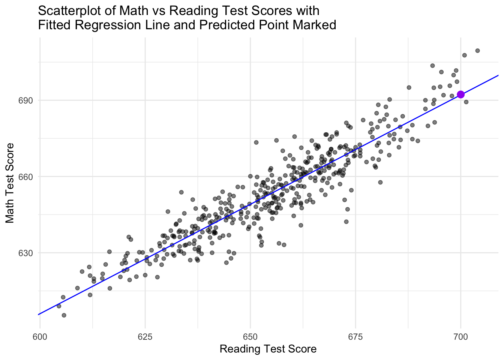
quietly import delimited "ca-schools.csv", clear* distribution of district-average math scores, with the mean markedquietlysummarize mathlocal mean_math = r(mean)histogram math, width(5) fcolor(ltblue) lcolor(black) ///title("Distribution of District-Average Math Scores Across All School Districts") ///xtitle("District-Average Math Test Score") ytitle("Count") ///xline(`mean_math', lcolor(red))
(bin=21, start=605.40002, width=5)
usingStatistics, StatsPlots# distribution of district-average math scores, with the mean markedhistogram(CASchools.math, bins =range(600, 710, step =5), color =:lightblue, linecolor =:black, alpha =0.5, xlabel ="District-Average Math Test Score", ylabel ="Count", title ="Distribution of District-Average Math Scores Across All School Districts", legend =false)vline!([mean(CASchools.math)], color =:red)
Plot the distribution of [variable name] in my dataset [dataset name] as a
histogram in [R / Python / Stata / Julia], with a vertical line marking its
mean. Use a bin width of [X] and label the axes clearly.
With so much variability around this mean (only 3% of districts are within one point of the global mean), this doesn’t seem like a strong prediction. Perhaps we can leverage other information we have about each district to improve our prediction.
Considering Other Variables
Reading score is a natural candidate: districts that are stronger in one subject are often stronger in both. Let’s check with a scatterplot:
# plot of district-average math vs read test scoresCASchools %>%ggplot(aes(x = read, y = math)) +geom_point(alpha =0.5) +labs(title ="Scatterplot of District-Average Math vs Reading Scores",x ="District-Average Reading Score", y ="District-Average Math Score") +theme_minimal()
import matplotlib.pyplot as plt# scatterplot of district-average math vs read test scoresplt.scatter(CASchools["read"], CASchools["math"], alpha=0.5)plt.xlabel("District-Average Reading Score")plt.ylabel("District-Average Math Score")plt.title("Scatterplot of District-Average Math vs Reading Scores")plt.show()
quietly import delimited "ca-schools.csv", clear* scatterplot of district-average math vs read test scoresscatter math read, title("Scatterplot of District-Average Math vs Reading Scores") ///xtitle("District-Average Reading Score") ytitle("District-Average Math Score")
usingStatsPlots# scatterplot of district-average math vs read test scoresscatter(CASchools.read, CASchools.math, alpha =0.5, legend =false, xlabel ="District-Average Reading Score", ylabel ="District-Average Math Score", title ="Scatterplot of District-Average Math vs Reading Scores")
Create a scatterplot of [y variable] against [x variable] in my dataset
[dataset name], using [R / Python / Stata / Julia]. Label the axes and
give the plot an informative title.
Districts with higher reading scores do tend to have higher math scores: most districts fall in the lower-left or upper-right quadrant, above or below both means together:
# plot of district-average math vs read test scores with global average math score# and global average reading score markedCASchools %>%ggplot(aes(x = read, y = math)) +geom_point(alpha =0.5) +geom_vline(xintercept =mean(CASchools$read), color="red") +geom_hline(yintercept =mean(CASchools$math), color="red") +labs(title="Scatterplot of District-Average Math vs Reading Scores with Means Marked",x ="District-Average Reading Score", y ="District-Average Math Score") +theme_minimal()
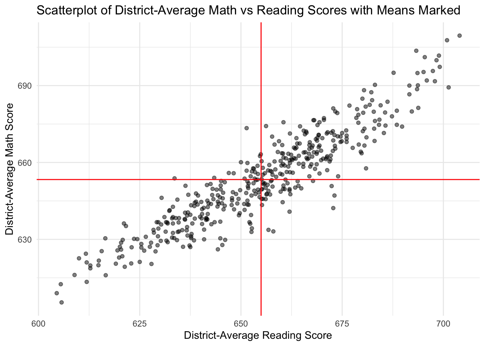
import matplotlib.pyplot as plt# scatterplot of district-average math vs read test scores, with both means markedplt.scatter(CASchools["read"], CASchools["math"], alpha=0.5)plt.axvline(CASchools["read"].mean(), color="red")plt.axhline(CASchools["math"].mean(), color="red")plt.xlabel("District-Average Reading Score")plt.ylabel("District-Average Math Score")plt.title("Scatterplot of District-Average Math vs Reading Scores with Means Marked")plt.show()
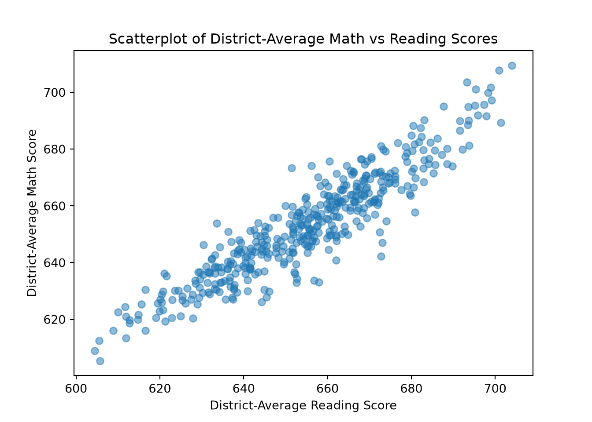
quietly import delimited "ca-schools.csv", clear* scatterplot of district-average math vs read test scores, with both means markedquietlysummarize readlocal mean_read = r(mean)quietlysummarize mathlocal mean_math = r(mean)scatter math read, ///title("Scatterplot of District-Average Math vs Reading Scores with Means Marked") ///xtitle("District-Average Reading Score") ytitle("District-Average Math Score") ///xline(`mean_read', lcolor(red)) yline(`mean_math', lcolor(red))
usingStatistics, StatsPlots# scatterplot of district-average math vs read test scores, with both means markedscatter(CASchools.read, CASchools.math, alpha =0.5, legend =false, xlabel ="District-Average Reading Score", ylabel ="District-Average Math Score", title ="Scatterplot of District-Average Math vs Reading Scores with Means Marked")vline!([mean(CASchools.read)], color =:red)hline!([mean(CASchools.math)], color =:red)
Create a scatterplot of [y variable] against [x variable] in my dataset
[dataset name] using [R / Python / Stata / Julia], with vertical and
horizontal lines marking the mean of each variable. What does it tell me
if most points fall in the lower-left or upper-right quadrant relative to
those lines?
So, knowing a district’s reading score narrows down its likely math score. But we can go further than “above or below average” — with OLS with one predictor, we can find the line \(Y = \beta_0 + X\beta_1\) that best fits the data, and use it to predict a district’s math score directly from its reading score. We’ll also see how to attach uncertainty to that prediction, rather than treating it as exact.
Specifying and Fitting a Linear Model
There are an infinite number of lines that can be “fit” to a scatterplot of two variables:
Figure 1 - A Scatterplot with Many Lines
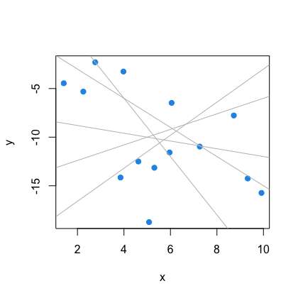
There are different methods to choose the “best” line for the data.
In OLS, this is done by minimizing the sum of squared residuals (SSR). A residual is the difference between the observed dependent variable, \(Y\), and the fitted or predicted values of the dependent variable, \(\hat{Y}\) (see Blackwell (2026), Chapter 7, for a full derivation of the least-squares objective).
Figure 2 - A Fitted Line with Residuals
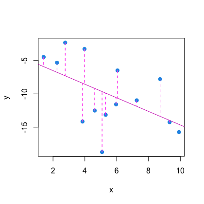
For OLS with one predictor, we obtain fitted values using the regression equation \(\hat{Y} = \hat{\beta}_0 + X\hat{\beta}_1\), where \(\hat{\beta}_0\) and \(\hat{\beta}_1\) are the estimated regression coefficients. In this setting, OLS estimates \(\hat{\beta}_0\) and \(\hat{\beta}_1\) as the values of \(\beta_0\) and \(\beta_1\) that minimize the sum of squared residuals:
For OLS with multiple predictors, we obtain fitted values using the regression equation \(\hat{Y} = \hat{\beta}_0 + X_1\hat{\beta}_1 + X_2\hat{\beta}_2 + ... + X_k\hat{\beta}_k\), where \(\hat{\beta}_0\) and \(\hat{\beta}_1, \hat{\beta}_2, ..., \hat{\beta}_k\) are the estimated regression coefficients. In this setting, the OLS estimator \(\hat{\beta}\) is defined as the value of \(\beta\) that minimizes the sum of squared residuals:
The \(\beta_0\) and \(\beta_1\) that appear in the population model \(Y = \beta_0 + X\beta_1 + \varepsilon\) are not something we observe directly — they are the coefficients of the population best linear projection (BLP) of \(Y\) onto \(X\): the linear function that minimizes population mean-squared error,
OLS is the sample analogue of this population problem: it replaces the population expectation with a sample average and finds the \(\hat{\beta}_0, \hat{\beta}_1\) that minimize the sum of squared residuals in the data we actually observe (as in the formulas above). \(\hat{\beta}_0\) and \(\hat{\beta}_1\) are estimators of \(\beta_0\) and \(\beta_1\) — not the population quantities themselves.
The conditional expectation function (CEF), \(E[Y \mid X = x]\), is the true average of \(Y\) at each value of \(X\), and it can take any shape, linear or not. The best linear projection is, by construction, always linear. If the CEF happens to be linear in \(X\), the two coincide, and \(\beta_0, \beta_1\) describe the CEF exactly. If the CEF is not linear, OLS still estimates the best linear projection — the line that comes closest to the CEF under squared-error loss — but that line is only an approximation, and it may not answer the substantive question a researcher actually cares about (see Blackwell (2026), chapter 6, for a fuller treatment of the CEF and best linear projection).
This also clarifies the difference between an error and a residual. The population error (or projection error) is \(\varepsilon = Y - \beta_0 - X\beta_1\): the gap between \(Y\) and the population BLP, evaluated at the true, unobserved coefficients. We never observe \(\varepsilon\) directly. The sample residual is \(e = Y - \hat{\beta}_0 - X\hat{\beta}_1\): the gap between \(Y\) and the fitted line, evaluated at the estimated coefficients. Residuals are observable, and they are what we actually plot and compute when checking assumptions later in this guide — but they are not the same object as the population errors those assumptions are stated in terms of.
What Does “Linear” Mean, Exactly?
Linearity does not mean that \(Y\) must vary with \(X\) along a line — it means the model must be linear in its unknown parameters. For example,
is still a linear regression, even though the fitted relationship is curved in \(X\): the unknown coefficients \(\beta_0, \beta_1, \beta_2\) each enter the equation linearly (multiplied by a known function of \(X\) and summed). By contrast,
\[Y = \beta_0 + \exp(\beta_1 X) + \varepsilon\]
is nonlinear in the parameter\(\beta_1\), since \(\beta_1\) sits inside a nonlinear function of itself — this can’t be fit with OLS and requires nonlinear least squares instead.
This distinction can trip up reparameterizations that look harmless. A term like \(\beta_2^2 X\) is nonlinear in \(\beta_2\), even though it’s linear in \(X\). It might be tempting to relabel \(\gamma = \beta_2^2\) and fit \(Y = \beta_0 + \gamma X + \varepsilon\) instead — but \(\gamma\) is a different parameter from \(\beta_2\): because \(\gamma = \beta_2^2 \geq 0\) by construction, this reparameterization silently imposes \(\gamma \geq 0\) and discards any information about the sign of \(\beta_2\).
The linearity assumption that actually matters for OLS, then, is that the conditional expectation function (CEF) is linear in the included regressors — \(E[Y \mid X] = \beta_0 + \beta_1 X_1 + \dots + \beta_k X_k\) for known functions \(X_1, \dots, X_k\) of the original variables, which can include polynomial terms, interactions, or other transformations, as long as the coefficients enter linearly. If the true CEF is not linear in the included regressors, OLS still estimates a best linear projection (see What Does OLS Actually Estimate? above), but that projection may not equal the CEF (see Blackwell (2026), chapter 6, on nonlinear functions of covariates). We come back to how this is checked, and what to do if it fails, in Diagnostics and Influence below.
Fitting the Model
We predict district-average math score from district-average reading score using the following equation:
\(\beta_0\) is the intercept (expected math score when reading score is 0) and \(\beta_1\) is the slope (expected change in math score per one-point increase in reading score). Here, the intercept isn’t meaningful — a reading score of 0 never occurs — so the slope is the coefficient that matters (in applications where the predictor can plausibly take the value 0, the intercept is meaningful).
Fitting this model using statistical software is quite easy:
# OLS model of math score on reading scoremodel_math_read <-lm(math ~ read, data = CASchools)summary(model_math_read)
Call:
lm(formula = math ~ read, data = CASchools)
Residuals:
Min 1Q Median 3Q Max
-26.4897 -4.2335 0.5528 4.2775 23.1307
Coefficients:
Estimate Std. Error t value Pr(>|t|)
(Intercept) 89.56580 11.50984 7.782 5.67e-14 ***
read 0.86077 0.01756 49.005 < 2e-16 ***
---
Signif. codes: 0 '***' 0.001 '**' 0.01 '*' 0.05 '.' 0.1 ' ' 1
Residual standard error: 7.23 on 418 degrees of freedom
Multiple R-squared: 0.8517, Adjusted R-squared: 0.8514
F-statistic: 2402 on 1 and 418 DF, p-value: < 2.2e-16
import statsmodels.api as sm# OLS model of math score on reading scoremodel_math_read = sm.OLS.from_formula("math ~ read", data=CASchools).fit()print(model_math_read.summary())
OLS Regression Results
==============================================================================
Dep. Variable: math R-squared: 0.852
Model: OLS Adj. R-squared: 0.851
Method: Least Squares F-statistic: 2402.
Date: Wed, 19 Aug 2026 Prob (F-statistic): 2.32e-175
Time: 14:37:23 Log-Likelihood: -1425.8
No. Observations: 420 AIC: 2856.
Df Residuals: 418 BIC: 2864.
Df Model: 1
Covariance Type: nonrobust
==============================================================================
coef std err t P>|t| [0.025 0.975]
------------------------------------------------------------------------------
Intercept 89.5658 11.510 7.782 0.000 66.941 112.190
read 0.8608 0.018 49.005 0.000 0.826 0.895
==============================================================================
Omnibus: 10.622 Durbin-Watson: 1.855
Prob(Omnibus): 0.005 Jarque-Bera (JB): 13.262
Skew: -0.255 Prob(JB): 0.00132
Kurtosis: 3.706 Cond. No. 2.14e+04
==============================================================================
Notes:
[1] Standard Errors assume that the covariance matrix of the errors is correctly specified.
[2] The condition number is large, 2.14e+04. This might indicate that there are
strong multicollinearity or other numerical problems.
quietly import delimited "ca-schools.csv", clear* OLS modelof math scoreon reading scoreregress math read
Source | SS df MS Number of obs = 420
-------------+---------------------------------- F(1, 418) = 2401.51
Model | 125522.592 1 125522.592 Prob > F = 0.0000
Residual | 21848.13 418 52.2682536 R-squared = 0.8517
-------------+---------------------------------- Adj R-squared = 0.8514
Total | 147370.722 419 351.720099 Root MSE = 7.2297
------------------------------------------------------------------------------
math | Coefficient Std. err. t P>|t| [95% conf. interval]
-------------+----------------------------------------------------------------
read | .8607668 .0175648 49.01 0.000 .8262404 .8952931
_cons | 89.5658 11.50984 7.78 0.000 66.94141 112.1902
------------------------------------------------------------------------------
usingGLM, DataFrames# OLS model of math score on reading scoremodel_math_read =lm(@formula(math ~ read), CASchools)
Fit an OLS regression of [outcome variable] on [predictor variable] in my
dataset [dataset name], using [R / Python / Stata / Julia].
Please:
1. Show me the code to fit the model and print a full summary (coefficients,
standard errors, t-values, p-values, R-squared).
2. Explain what the intercept and slope mean in the units of my variables.
3. Tell me whether the intercept is substantively meaningful given my
predictor's plausible range of values.
From the model outputs, we see that the estimated slope is about 0.861: for every one-point increase in district-average reading score, we expect a 0.861-point increase in district-average math score.
How Well Does the Model Fit?
The equal-means model from earlier is exactly the intercept-only model: its only “prediction” is the sample mean, \(\bar{Y}\), for every district. We can quantify how much better our fitted line does using the total and residual sums of squares.
The total sum of squares (SST) measures how much the observed math scores vary around their mean — the squared-error loss of the intercept-only model:
\[SST = \sum_{i=1}^n (y_i - \bar{y})^2\]
The sum of squared residuals (SSR) measures how much is left over after fitting the line — the squared-error loss of our fitted model:
\[SSR = \sum_{i=1}^n (y_i - \hat{y}_i)^2\]
\(R^2\) compares the two:
\[R^2 = 1 - \frac{SSR}{SST}\]
Again, we can compute this easily using statistical software:
# total and residual sum of squares, and R-squared, for the fitted modelSST <-sum((CASchools$math -mean(CASchools$math))^2)SSR <-sum(resid(model_math_read)^2)R2 <-1- SSR / SSTSST
[1] 147370.7
SSR
[1] 21848.13
R2
[1] 0.8517471
import statsmodels.api as smmodel_math_read = sm.OLS.from_formula("math ~ read", data=CASchools).fit()# total and residual sum of squares, and R-squared, for the fitted modelSST = ((CASchools["math"] - CASchools["math"].mean()) **2).sum()SSR = (model_math_read.resid **2).sum()R2 =1- SSR / SSTSST, SSR, R2
quietly import delimited "ca-schools.csv", clearquietlyregress math read* total and residual sumof squares, and R-squared, for the fittedmodeldisplay"SST = "e(rss) + e(mss)display"SSR = "e(rss)display"R2 = "e(r2)
SST = 147370.72
SSR = 21848.13
R2 = .85174715
usingGLM, DataFrames, Statisticsmodel_math_read =lm(@formula(math ~ read), CASchools)# total and residual sum of squares, and R-squared, for the fitted modelSSR =deviance(model_math_read)SST =sum((CASchools.math .-mean(CASchools.math)).^2)R2 =r2(model_math_read)
For my fitted OLS model of [outcome] on [predictor] in
[R / Python / Stata / Julia], compute:
1. The total sum of squares (SST) -- squared-error loss of an
intercept-only model.
2. The sum of squared residuals (SSR) -- squared-error loss of my
fitted model.
3. R-squared, computed as 1 - SSR/SST.
Show me the code, and explain what R-squared does and does not tell me
about my model.
\(R^2 \approx 0.852\) here, matching the “Multiple R-squared” value already reported in the summary outputs above. \(R^2\) is best read as an in-sample quantity: using read to predict math reduces the total squared error, relative to just guessing the sample mean for every district, by about 85% (see Blackwell (2026), chapter 7, for the full derivation).
\(R^2\) is often over-interpreted:
\(R^2\)cannot decrease when more predictors are added to a model, even irrelevant ones — OLS can always set an added predictor’s coefficient to (approximately) zero, so adding predictors can only reduce or leave unchanged the in-sample SSR. This makes \(R^2\) a poor tool for comparing models with different numbers of predictors.
A high \(R^2\) does not establish causality: it measures how much of the variation in \(Y\) is associated with \(X\) in this sample, not whether that association reflects a causal effect (see Identification Comes First above).
A high \(R^2\) does not establish calibration or correct specification: a model can fit the observed data well and still be a poor description of the true CEF, or produce systematically biased predictions in some region of \(X\).
A high in-sample \(R^2\) does not establish out-of-sample performance — it says nothing about how well the model predicts data it was not fit on (see the held-out comparison later in this guide).
Adjusted\(R^2\) is a limited correction for the first problem: it penalizes \(R^2\) for the number of predictors in the model, so it can decrease when an added predictor does not improve the fit enough to be “worth” the extra parameter. Our model’s adjusted \(R^2\) is about 0.851 — nearly identical to \(R^2\) here, since we have only one predictor. But adjusted \(R^2\) is still an in-sample quantity, computed on the same data used to fit the model; it is not a substitute for validating a model’s performance on data it has not seen.
Quantifying Uncertainty
OLS and the Gauss–Markov Theorem
OLS Is BLUE, Not “Best” in Every Sense
Under a set of classical conditions (below), the Gauss–Markov theorem says OLS is the Best Linear Unbiased Estimator (BLUE) of \(\beta\)(Blackwell 2026, chap. 8). “Best” has a narrow meaning here: among all estimators that are (a) linear functions of the observed outcomes and (b) unbiased for the same coefficient vector, OLS has the minimum variance. Lower variance matters because it means our estimates are more precise from sample to sample — tighter confidence intervals, more power to detect real effects, less risk that any one estimate is far off.
But “best” does not mean the best research design, the best predictor, the best causal estimate, or the best estimator among every possible estimator. Biased estimators (ridge, lasso) can have lower total error than OLS; nonlinear estimators can outperform OLS when the truth is nonlinear; and no amount of statistical efficiency compensates for a design that hasn’t identified the quantity of interest.
The theorem requires three conditions: (1) a correctly specified linear conditional mean / zero conditional error, \(E[\varepsilon \mid X] = 0\); (2) full column rank (no predictor is an exact linear combination of the others); and (3) homoskedastic, uncorrelated errors. Normality is not required — it is only needed for exact small-sample \(t\)- and \(F\)-tests; large-sample inference is still available without it.
Two consequences follow. An unbiased estimate of the wrong estimand is not helpful: if condition (1) fails, OLS is unbiased for the wrong thing (the best linear approximation, not the true CEF). And under heteroskedasticity, OLS point estimates typically remain consistent, but the textbook efficiency result no longer holds and the conventional standard-error formula is wrong — which is exactly why we check for it in Diagnostics and Influence below.
Coefficients, Standard Errors, and What They Answer
Before turning to statistical significance, the summary outputs from above report several distinct quantities, each answering a different question (see Blackwell (2026), chapter 8, for the formal statistical theory behind them):
The coefficient estimate (\(\hat{\beta}_1 = 0.861\)) is our point estimate of the population parameter — what is our best guess for the size and direction of the relationship?
The standard error (SE) estimates how much \(\hat{\beta}_1\) would vary from sample to sample if we repeated this study on a new set of districts — how precisely is this estimate pinned down?
The 95% confidence interval is (approximately) \(\hat{\beta}_1 \pm 1.96 \times SE\) — what range of effect sizes is consistent with the data?
The test statistic (t-value) is the coefficient divided by its SE — how many standard errors is the estimate from the null value (usually 0)?
The p-value is the probability of observing a test statistic at least this extreme if the null hypothesis were exactly true — how surprising is this data, if there were truly no linear relationship?
We can compute the confidence interval directly as well:
import statsmodels.api as smmodel_math_read = sm.OLS.from_formula("math ~ read", data=CASchools).fit()# 95% confidence interval for each coefficientmodel_math_read.conf_int()
quietly import delimited "ca-schools.csv", clear* 95% confidence interval for each coefficient (shown bydefault)regress math read
Source | SS df MS Number of obs = 420
-------------+---------------------------------- F(1, 418) = 2401.51
Model | 125522.592 1 125522.592 Prob > F = 0.0000
Residual | 21848.13 418 52.2682536 R-squared = 0.8517
-------------+---------------------------------- Adj R-squared = 0.8514
Total | 147370.722 419 351.720099 Root MSE = 7.2297
------------------------------------------------------------------------------
math | Coefficient Std. err. t P>|t| [95% conf. interval]
-------------+----------------------------------------------------------------
read | .8607668 .0175648 49.01 0.000 .8262404 .8952931
_cons | 89.5658 11.50984 7.78 0.000 66.94141 112.1902
------------------------------------------------------------------------------
usingGLM, DataFramesmodel_math_read =lm(@formula(math ~ read), CASchools)# 95% confidence interval for each coefficientconfint(model_math_read)
Compute the 95% confidence interval for each coefficient in my fitted OLS
model of [outcome] on [predictor(s)] in [R / Python / Stata / Julia].
Explain what range of effect sizes this interval says is consistent with
my data.
For read, the 95% confidence interval is about \([0.826, 0.895]\) — a fairly narrow range, reflecting that this estimate is based on a full census of 420 districts.
Before asking whether this relationship is statistically significant, we should ground the estimate in these terms: its magnitude and units (a 0.861-point increase in district-average math score for every one-point increase in district-average reading score — large or small, relative to the roughly 600-to-700-point range of reading scores in our data?), its uncertainty (an SE of about 0.018, and a 95% CI of \([0.826, 0.895]\) — a tightly estimated slope), and its support (420 districts, with reading scores ranging from about 605 to 704 — this estimate describes the relationship over that range, and should not be extrapolated to reading scores well outside it). Only then does it make sense to consider statistical significance.
Linear model outputs also provide t-values and p-values for each coefficient. Generally, the t-value and p-value for the intercept are not of interest, since testing if the intercept is significantly different from zero is generally not insightful. However, the t-value and p-value for the slope are of interest, since the slope is often the more substantively meaningful coefficient.
We can use the t-value and p-value to test the null hypothesis that the true slope at the population level is 0 (i.e., that there is no linear relationship between a district’s average reading score and a district’s average math score at the population level) — a zero slope rules out a linear association, not necessarily any relationship at all (see What Does OLS Actually Estimate? above). This null hypothesis is exactly the equal-means model we considered earlier, where the predicted math score is just the average math score across all districts and the slope is 0:
# scatterplot of district-average math vs read test scores with equal means model# and fitted regression lineCASchools %>%ggplot(aes(x = read, y = math)) +geom_point(alpha =0.5) +geom_hline(yintercept =mean(CASchools$math), color="red", linetype =2) +geom_abline(intercept =coef(model_math_read)[1],slope =coef(model_math_read)[2], color="blue") +labs(title ="Scatterplot of District-Average Math vs Reading Test Scores withEqual Means Model and Fitted Regression Line",x ="District-Average Reading Score", y ="District-Average Math Score") +theme_minimal()
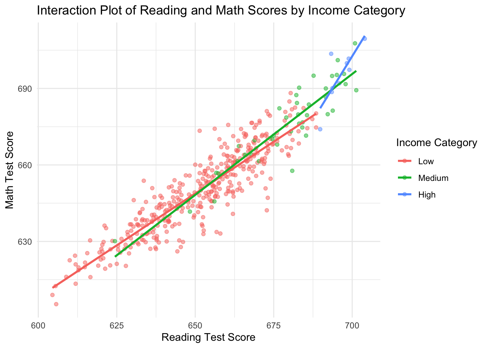
import numpy as npimport matplotlib.pyplot as pltimport statsmodels.api as smmodel_math_read = sm.OLS.from_formula("math ~ read", data=CASchools).fit()b0, b1 = model_math_read.params["Intercept"], model_math_read.params["read"]# scatterplot of district-average math vs read test scores with equal means model# and fitted regression linex_line = np.array([CASchools["read"].min(), CASchools["read"].max()])plt.scatter(CASchools["read"], CASchools["math"], alpha=0.5)plt.axhline(CASchools["math"].mean(), color="red", linestyle="--")plt.plot(x_line, b0 + b1 * x_line, color="blue")plt.xlabel("District-Average Reading Score")plt.ylabel("District-Average Math Score")plt.title("Equal Means Model and Fitted Regression Line")plt.show()
quietly import delimited "ca-schools.csv", clearquietlysummarize math* scatterplot of district-average math vs read test scores with equal meansmodel* and fitted regression linetwoway (scatter math read, msymbol(circle) mcolor(%50)) /// (lfit math read, lcolor(blue)) /// (functiony = `r(mean)', range(read) lcolor(red) lpattern(dash)), ///title("Equal Means Model and Fitted Regression Line") ///xtitle("District-Average Reading Score") ytitle("District-Average Math Score") ///legend(off)
usingStatistics, StatsPlotsmodel_math_read =lm(@formula(math ~ read), CASchools)b0, b1 =coef(model_math_read)# scatterplot of district-average math vs read test scores with equal means model# and fitted regression linescatter(CASchools.read, CASchools.math, alpha =0.5, legend =false, xlabel ="District-Average Reading Score", ylabel ="District-Average Math Score", title ="Equal Means Model and Fitted Regression Line")hline!([mean(CASchools.math)], color =:red, linestyle =:dash)plot!(x -> b0 + b1 * x, extrema(CASchools.read)..., color =:blue)
Plot my data with [predictor] on the x-axis and [outcome] on the y-axis in
[R / Python / Stata / Julia], showing both the fitted OLS regression line
and a horizontal line at the outcome's overall mean (the "equal-means"
model). What does it mean if the fitted line is far from the horizontal
one?
So this test is, in effect, asking whether the two lines above are significantly different from each other.
By design, the fitted regression line always passes through \((\bar{X}, \bar{Y})\) — the mean of the predictor and the mean of the outcome:
# scatterplot of district-average math vs read test scores with mean values marked,# fitted regression line, and point of mean intersection markedCASchools %>%ggplot(aes(x = read, y = math)) +geom_point(alpha =0.5) +geom_vline(xintercept =mean(CASchools$read), color="red", linetype =2) +geom_hline(yintercept =mean(CASchools$math), color="red", linetype =2) +geom_abline(intercept =coef(model_math_read)[1],slope =coef(model_math_read)[2], color="blue") +annotate("point", x =mean(CASchools$read), y =mean(CASchools$math),color ="purple", size =3) +labs(title ="Scatterplot of District-Average Math vs Reading Scores withFitted Regression Line, Means Marked, and Point of Intersection Marked",x ="District-Average Reading Score", y ="District-Average Math Score") +theme_minimal()
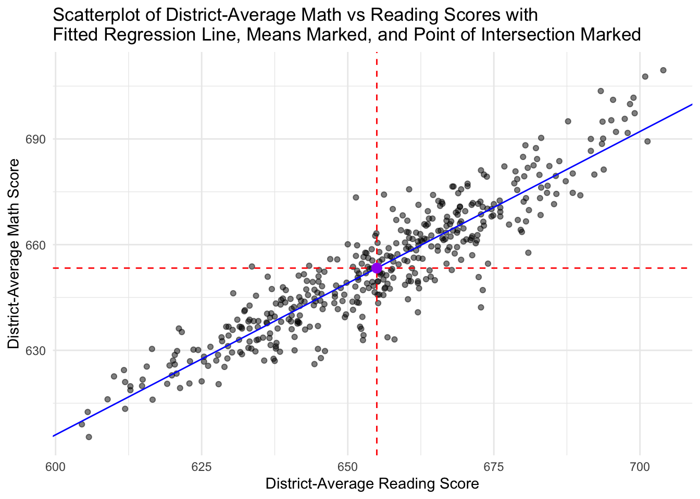
import numpy as npimport matplotlib.pyplot as pltimport statsmodels.api as smmodel_math_read = sm.OLS.from_formula("math ~ read", data=CASchools).fit()b0, b1 = model_math_read.params["Intercept"], model_math_read.params["read"]mean_read, mean_math = CASchools["read"].mean(), CASchools["math"].mean()# scatterplot of district-average math vs read test scores with mean values marked,# fitted regression line, and point of mean intersection markedx_line = np.array([CASchools["read"].min(), CASchools["read"].max()])plt.scatter(CASchools["read"], CASchools["math"], alpha=0.5)plt.axvline(mean_read, color="red", linestyle="--")plt.axhline(mean_math, color="red", linestyle="--")plt.plot(x_line, b0 + b1 * x_line, color="blue")plt.scatter([mean_read], [mean_math], color="purple", s=60, zorder=5)plt.xlabel("District-Average Reading Score")plt.ylabel("District-Average Math Score")plt.title("Fitted Regression Line, Means Marked, and Point of Intersection Marked")plt.show()
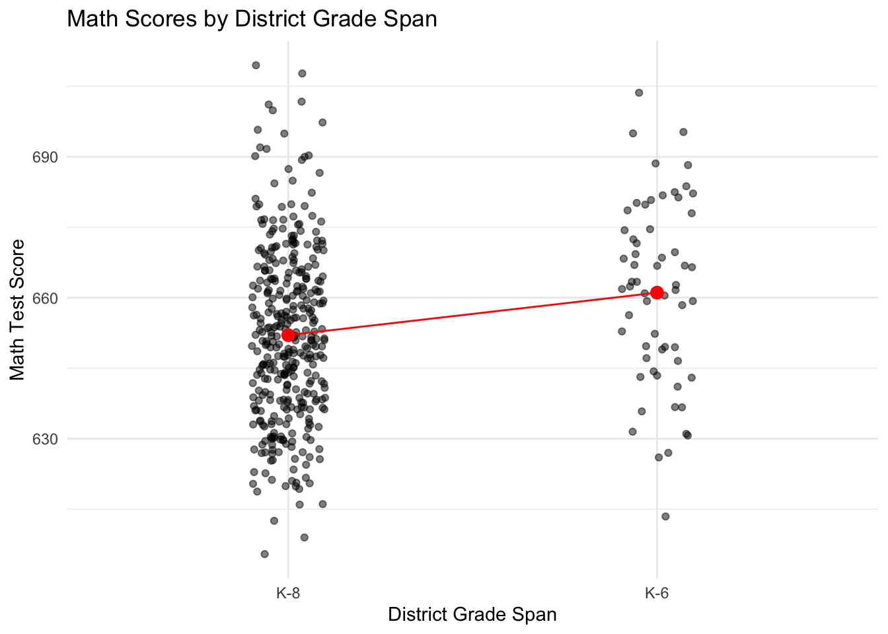
quietly import delimited "ca-schools.csv", clearquietlysummarize readlocal mean_read = r(mean)quietlysummarize mathlocal mean_math = r(mean)* scatterplot of district-average math vs read test scores with meanvalues marked,* fitted regression line, and point ofmean intersection markedtwoway (scatter math read, msymbol(circle) mcolor(%50)) /// (lfit math read, lcolor(blue)) /// (scatteri `mean_math'`mean_read', mcolor(purple) msymbol(circle) msize(large)), ///xline(`mean_read', lcolor(red) lpattern(dash)) yline(`mean_math', lcolor(red) lpattern(dash)) ///title("Fitted Regression Line, Means Marked, and Point of Intersection Marked") ///xtitle("District-Average Reading Score") ytitle("District-Average Math Score") ///legend(off)
usingStatistics, StatsPlotsmodel_math_read =lm(@formula(math ~ read), CASchools)b0, b1 =coef(model_math_read)mean_read, mean_math =mean(CASchools.read), mean(CASchools.math)# scatterplot of district-average math vs read test scores with mean values marked,# fitted regression line, and point of mean intersection markedscatter(CASchools.read, CASchools.math, alpha =0.5, legend =false, xlabel ="District-Average Reading Score", ylabel ="District-Average Math Score", title ="Fitted Regression Line, Means Marked, and Point of Intersection Marked")vline!([mean_read], color =:red, linestyle =:dash)hline!([mean_math], color =:red, linestyle =:dash)plot!(x -> b0 + b1 * x, extrema(CASchools.read)..., color =:blue)scatter!([mean_read], [mean_math], color =:purple, markersize =6)
Plot my data with [predictor] on the x-axis and [outcome] on the y-axis in
[R / Python / Stata / Julia], marking the mean of each variable with a
reference line, adding the fitted OLS regression line, and marking the
point where the two mean lines intersect. Confirm whether the fitted line
passes through that intersection point.
The p-value here is very small (\(p < .001\)), which would let us reject the null hypothesis that the true slope is zero — if the assumptions underlying that p-value hold. Before treating that conclusion as final, we need to check those assumptions:
Diagnostics and Influence
Rather than a pass/fail checklist, it is more useful to ask what each condition justifies and what changes if it fails:
Condition
What it supports
What failure changes
Finite moments and full rank
Existence and uniqueness of the best linear projection/OLS solution
Some coefficients may not be identified or estimable
Defensible sampling or stochastic framework
Population generalization and sampling uncertainty
The regression may remain descriptive for the observed data
Appropriate dependence assumptions
Valid uncertainty estimates
Conventional SEs, CIs, and tests may be wrong
Linear CEF/zero conditional mean
Unbiased estimation of the stated conditional-mean coefficients
OLS may instead target a best linear approximation
Homoskedastic uncorrelated errors
Conventional variance formula and textbook BLUE result
Point estimates may survive, but efficiency and conventional SE claims do not
Conditional normality
Exact small-sample \(t\) and \(F\) inference
Large-sample inference may still be available
Diagnostics Have Limits
The diagnostics below can reveal problems — nonlinearity, heteroskedasticity, autocorrelation, multicollinearity — but they cannot prove exogeneity, independence, or causal identification. Passing every diagnostic tells you the conditions above are plausible; it does not tell you that the research design has identified the quantity you actually care about.
Below, we walk through how to assess and address the conditions most relevant to our regression examples: linearity, homoskedasticity, no autocorrelation, and (for models with multiple predictors) linear independence.
Linearity
We defined what “linear” means for a model like this — and why it matters — in What Does “Linear” Mean, Exactly? above. Here, we check it, and cover what to do if it fails.
Figure 3 - A relationship where the linearity assumption holds
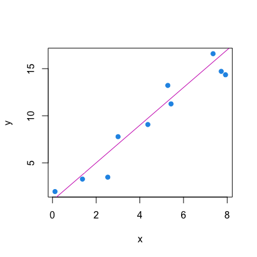
Figure 4 - A relationship where the linearity assumption does not hold
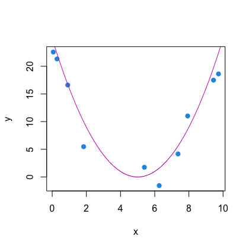
Assessing and Addressing Violations
We can get an initial sense of whether the CEF looks linear in the included regressors by creating a scatterplot of the predictor and outcome variables. From the scatterplots of math and reading scores above, the relationship between these two variables seems to be linear, so the linearity assumption seems to hold for that simple model.
Transformations and basis expansions (polynomials, splines) do not automatically repair a linearity violation — they change what the model is capable of fitting, but the resulting specification still needs to be checked, as it now targets a different, transformed estimand. A few points of note:
Transforming the outcome changes the estimand, not just the scale. A common fix for curvature is to log the outcome, the predictor, or both. Each specification answers a different substantive question:
Specification
Model
Interpretation of \(\beta_1\)
Level–level
\(Y = \beta_0 + \beta_1 X + \varepsilon\)
A one-unit increase in \(X\) is associated with a \(\beta_1\)-unit change in \(Y\)
Log(Y)–level(X)
\(\log(Y) = \beta_0 + \beta_1 X + \varepsilon\)
A one-unit increase in \(X\) is associated with an approximate \(100\beta_1\%\) change in \(Y\) (exact: \(100(e^{\beta_1}-1)\%\))
Level(Y)–log(X)
\(Y = \beta_0 + \beta_1 \log(X) + \varepsilon\)
A 1% increase in \(X\) is associated with an approximate \(\beta_1/100\)-unit change in \(Y\)
A 1% increase in \(X\) is associated with an approximate \(\beta_1\%\) change in \(Y\) (an elasticity)
Handling zeros and negative values is not trivial. The log is undefined at zero and below, which matters whenever \(X\) or \(Y\) can be zero or negative (e.g., income, test-score differences, count data). A common workaround is to add an arbitrary constant, like \(\log(Y+1)\) — but the choice of “+1” is arbitrary (it could just as easily be \(+0.5\) or \(+10\)), and the resulting coefficient’s meaning depends on that choice, particularly when many observations are near zero. If zeros are common, it is usually better to use a transformation designed for that setting (e.g., the inverse hyperbolic sine) or a model suited to the outcome’s distribution (see GLMs, below), rather than patch the log.
Approximate interpretations become misleading for large coefficients. The “\(100\beta_1\%\)” reading of a log-outcome coefficient is a small-\(\beta_1\) approximation; the exact one-unit effect on the original scale is \(100(e^{\beta_1}-1)\%\), which diverges from the approximation as \(|\beta_1|\) grows.
Retransformation is not automatic. If the goal is to predict \(Y\) itself (not \(\log Y\)) after fitting a log-outcome model, naively exponentiating the fitted values is biased, because
without an additional correction (e.g., Duan’s smearing estimator). Jensen’s inequality guarantees these two quantities differ whenever \(Y\) has any spread on the log scale.
Beyond transformations, curvature can also be addressed by changing the functional form itself, and different tools address different problems:
Polynomials add terms like \(X^2\), \(X^3\) to capture smooth curvature while remaining linear in the parameters (see above) — however, they can behave poorly at the boundaries of the data or under extrapolation.
Splines join low-order polynomials smoothly at a set of knots, offering more local flexibility than a single global polynomial while remaining linear in the parameters (and still fittable with OLS on an expanded set of basis functions).
Generalized additive models (GAMs) let the CEF be a sum of flexible, data-driven smooth functions of each predictor, without committing to a functional form in advance — useful when the shape of the relationship is itself unknown.
Nonlinear least squares is for models that are nonlinear in the parameters, like \(Y = \beta_0 + \exp(\beta_1 X) + \varepsilon\) above — it requires iterative optimization rather than the closed-form OLS solution.
Generalized linear models (GLMs) address a different problem: an outcome whose distribution doesn’t fit OLS’s assumptions (binary outcomes, counts), via a link function relating a linear predictor to the mean of that distribution. A GLM is not a generic fix for curvature in \(X\) — it is a fix for the outcome’s distribution, and the specific link function used introduces its own particular nonlinearity in the mean-predictor relationship on the original scale.
Homoskedasticity of Errors
Homoskedasticity of errors is the assumption that the error terms have equal variance across values of the predictor variable. As such, this assumption could be violated when the variance of the outcome variable changes across values of a predictor variable.
Figure 5 - A residual plot indicating that homoskedasticity holds
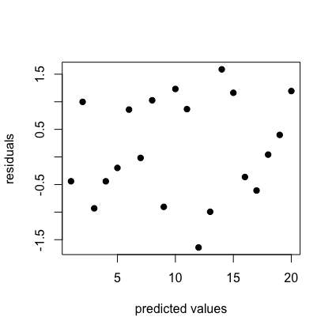
Figure 6 - A residual plot indicating that homoskedasticity does not hold
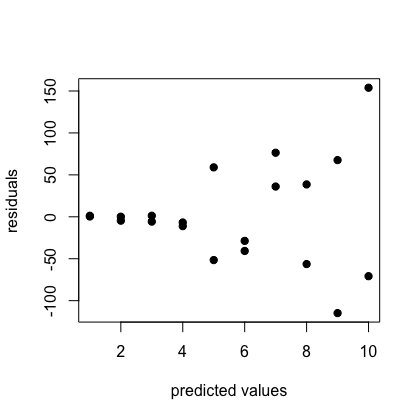
Homoskedasticity is not required for OLS coefficients to exist, or even for them to be consistent — it specifically supports the conventional variance formula and the textbook Gauss–Markov efficiency result (see OLS and the Gauss–Markov Theorem above). When it fails, point estimates typically survive, but the standard errors, confidence intervals, and hypothesis tests computed from the default formula do not.
Assessing and Addressing Violations
We can check this assumption by plotting the residuals vs the fitted values from our model, and formally test it with the Breusch-Pagan test (Hothorn et al. 2024a) or the White test (White’s Test 2019):
# plot of residuals vs fitted valuesCASchools %>%ggplot(aes(x =fitted(model_math_read), y =resid(model_math_read))) +geom_point(alpha =0.5) +labs(title ="Residuals vs Fitted Values for OLS Regression Model ofMath vs Reading Scores",x ="Fitted Values", y ="Residuals") +theme_minimal()
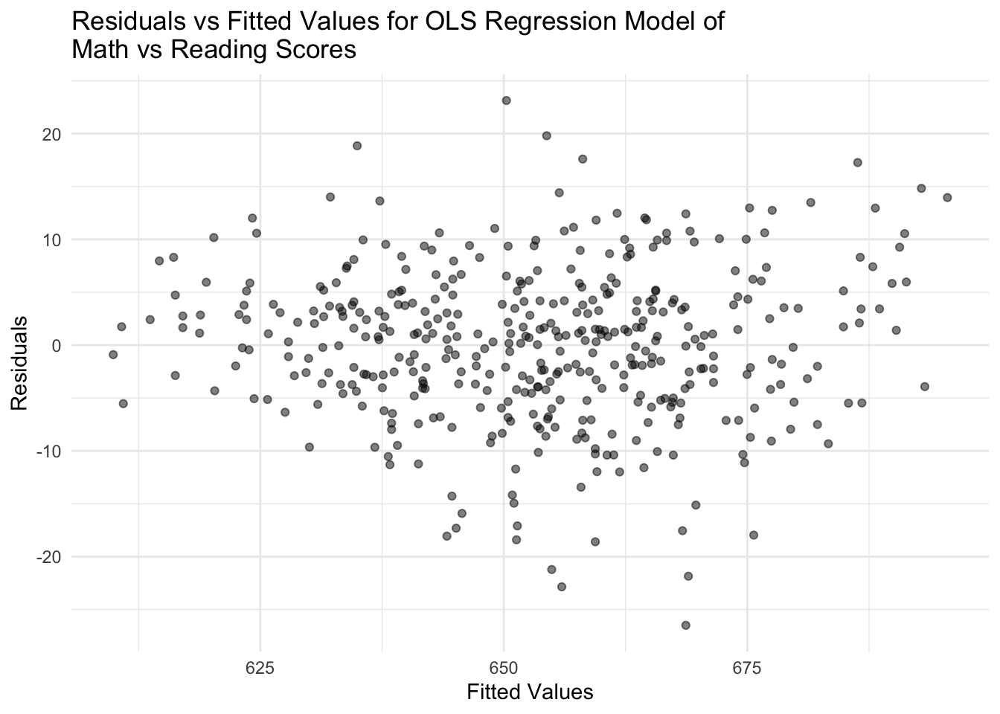
import matplotlib.pyplot as pltimport statsmodels.api as smmodel_math_read = sm.OLS.from_formula("math ~ read", data=CASchools).fit()# plot of residuals vs fitted valuesplt.scatter(model_math_read.fittedvalues, model_math_read.resid, alpha=0.5)plt.axhline(0, color="black", linestyle="--", linewidth=0.8)plt.xlabel("Fitted Values")plt.ylabel("Residuals")plt.title("Residuals vs Fitted Values for OLS Regression Model of\nMath vs Reading Scores")plt.show()
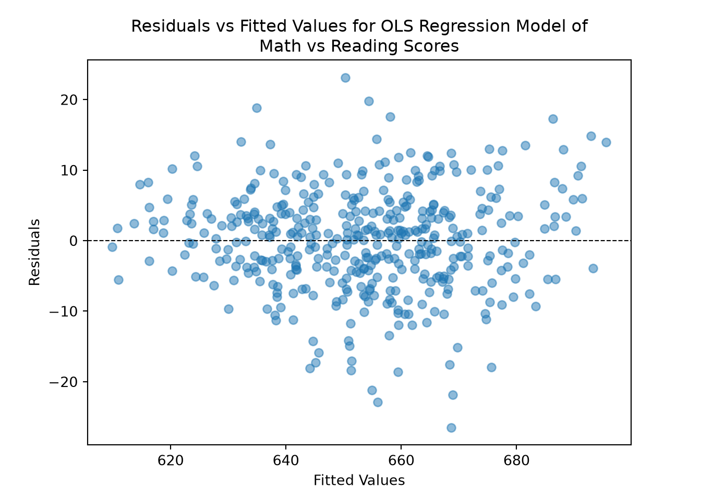
quietly import delimited "ca-schools.csv", clearquietlyregress math readpredict fitted_vals, xbpredict residuals, resid* plot of residuals vs fittedvaluesscatter residuals fitted_vals, yline(0) ///title("Residuals vs Fitted Values for OLS Regression Model of""Math vs Reading Scores") ///xtitle("Fitted Values") ytitle("Residuals")
usingGLM, DataFrames, StatsPlotsmodel_math_read =lm(@formula(math ~ read), CASchools)# plot of residuals vs fitted valuesscatter(predict(model_math_read), residuals(model_math_read), alpha =0.5, legend =false, xlabel ="Fitted Values", ylabel ="Residuals", title ="Residuals vs Fitted Values for OLS Regression Model of\nMath vs Reading Scores")hline!([0], color =:black, linestyle =:dash)
Plot the residuals against the fitted values for my OLS model of [outcome]
on [predictor(s)] in [R / Python / Stata / Julia]. What pattern in this
plot would suggest heteroskedasticity, and what would suggest it's absent?
quietly import delimited "ca-schools.csv", clearquietlyregress math read* Breusch-Pagan testfor homoskedasticityestathettest* White testfor homoskedasticityestatimtest, white
Breusch–Pagan/Cook–Weisberg test for heteroskedasticity
Assumption: Normal error terms
Variable: Fitted values of math
H0: Constant variance
chi2(1) = 10.24
Prob > chi2 = 0.0014
White's test
H0: Homoskedasticity
Ha: Unrestricted heteroskedasticity
chi2(2) = 8.06
Prob > chi2 = 0.0177
Cameron & Trivedi's decomposition of IM-test
--------------------------------------------------
Source | chi2 df p
---------------------+----------------------------
Heteroskedasticity | 8.06 2 0.0177
Skewness | 2.61 1 0.1064
Kurtosis | 4.30 1 0.0382
---------------------+----------------------------
Total | 14.97 4 0.0048
--------------------------------------------------
usingGLM, DataFrames, Distributionsmodel_math_read =lm(@formula(math ~ read), CASchools)# Breusch-Pagan test for homoskedasticity (manual: regress squared residuals# on the predictor, LM = n * R^2 from that auxiliary regression)CASchools.resid_sq =residuals(model_math_read) .^2aux_model_bp =lm(@formula(resid_sq ~ read), CASchools)n =nrow(CASchools)LM_bp = n *r2(aux_model_bp)p_bp =1-cdf(Chisq(1), LM_bp)# White test for homoskedasticity (manual: same idea, but the auxiliary# regression also includes the squared predictor; no mature built-in for# either test identified in Julia)CASchools.read_sq = CASchools.read .^2aux_model_white =lm(@formula(resid_sq ~ read + read_sq), CASchools)LM_white = n *r2(aux_model_white)p_white =1-cdf(Chisq(2), LM_white)(LM_bp = LM_bp, p_bp = p_bp, LM_white = LM_white, p_white = p_white)
Run a Breusch-Pagan test and a White test for heteroskedasticity on my
OLS model of [outcome] on [predictor(s)] in [R / Python / Stata / Julia].
Explain what the null hypothesis is for each, how they differ, and what
the resulting p-values do and don't tell me about my model's
coefficients.
Although the residual plot above does not show an obviously dramatic pattern, both the Breusch-Pagan test (\(p \approx .006\)) and the White test (\(p \approx .018\)) reject the null hypothesis of homoskedasticity in the R and Python tabs above. Note that Stata’s estat hettest reports a different statistic than R and Python’s Breusch-Pagan test by default, since it runs the classic Breusch-Pagan/Cook-Weisberg test rather than R and Python’s studentized version of that test (Koenker 1981). Even though the scatter looks roughly even, these formal tests can pick up on patterns (e.g., a mild but systematic increase in variance) that are hard to see by eye in a plot like this one, so we should take the results seriously. As discussed above, this does not mean the estimated slope and intercept are wrong or that OLS breaks down: homoskedasticity supports the conventional variance formula and the textbook Gauss–Markov efficiency result, not the existence of the coefficients themselves. What it does mean is that the default standard errors, confidence intervals, and p-values reported by the above summary outputs are not reliable as computed.
Robust standard errors fix exactly this. Robust (e.g., Huber-White) standard errors recompute the uncertainty around the coefficient estimates without assuming constant error variance (Zeileis, Köll, and Graham 2020). Switching SE estimators changes the standard errors, confidence intervals, and p-values — not the OLS point estimate itself — and they are not a general-purpose fix: they do not repair confounding, nonlinearity, measurement error, or a bad research design. Nor are they automatically “reliable” just because they relax homoskedasticity: they still require the correct dependence structure (a heteroskedasticity-robust SE does not, by itself, account for clustering), an adequate number of observations or clusters, and appropriate finite-sample corrections. See our standard errors guide for a full comparison of conventional, heteroskedasticity-robust, clustered, and serial-correlation-robust choices.
library(sandwich)# conventional vs. HC3 heteroskedasticity-robust standard errors on `read`se_conventional_hc <-coef(summary(model_math_read))["read", "Std. Error"]se_hc3 <-sqrt(diag(vcovHC(model_math_read, type ="HC3")))["read"]coeftest(model_math_read)
t test of coefficients:
Estimate Std. Error t value Pr(>|t|)
(Intercept) 89.565797 11.509842 7.7817 5.667e-14 ***
read 0.860767 0.017565 49.0052 < 2.2e-16 ***
---
Signif. codes: 0 '***' 0.001 '**' 0.01 '*' 0.05 '.' 0.1 ' ' 1
coeftest(model_math_read, vcov =vcovHC(model_math_read, type ="HC3"))
t test of coefficients:
Estimate Std. Error t value Pr(>|t|)
(Intercept) 89.565797 10.998194 8.1437 4.465e-15 ***
read 0.860767 0.016909 50.9064 < 2.2e-16 ***
---
Signif. codes: 0 '***' 0.001 '**' 0.01 '*' 0.05 '.' 0.1 ' ' 1
import statsmodels.api as smmodel_math_read = sm.OLS.from_formula("math ~ read", data=CASchools).fit()model_math_read_hc3 = sm.OLS.from_formula("math ~ read", data=CASchools).fit(cov_type="HC3")# conventional vs. HC3 heteroskedasticity-robust standard errors on `read`model_math_read.bse["read"], model_math_read_hc3.bse["read"]
quietly import delimited "ca-schools.csv", clear* conventional vs. HC3 heteroskedasticity-robust standard errors on `read`regress math readregress math read, vce(hc3)
Source | SS df MS Number of obs = 420
-------------+---------------------------------- F(1, 418) = 2401.51
Model | 125522.592 1 125522.592 Prob > F = 0.0000
Residual | 21848.13 418 52.2682536 R-squared = 0.8517
-------------+---------------------------------- Adj R-squared = 0.8514
Total | 147370.722 419 351.720099 Root MSE = 7.2297
------------------------------------------------------------------------------
math | Coefficient Std. err. t P>|t| [95% conf. interval]
-------------+----------------------------------------------------------------
read | .8607668 .0175648 49.01 0.000 .8262404 .8952931
_cons | 89.5658 11.50984 7.78 0.000 66.94141 112.1902
------------------------------------------------------------------------------
Linear regression Number of obs = 420
F(1, 418) = 2591.46
Prob > F = 0.0000
R-squared = 0.8517
Root MSE = 7.2297
------------------------------------------------------------------------------
| Robust HC3
math | Coefficient std. err. t P>|t| [95% conf. interval]
-------------+----------------------------------------------------------------
read | .8607668 .0169088 50.91 0.000 .8275298 .8940037
_cons | 89.5658 10.99819 8.14 0.000 67.94714 111.1845
------------------------------------------------------------------------------
usingGLM, DataFrames, CovarianceMatricesmodel_math_read =lm(@formula(math ~ read), CASchools)# conventional vs. HC3 heteroskedasticity-robust standard errors on `read`se_conventional =stderror(model_math_read)se_hc3 =stderror(model_math_read, HC3())(se_conventional, se_hc3)
I have evidence of heteroskedasticity in my OLS model of [outcome] on
[predictor(s)] in [R / Python / Stata / Julia].
1. Show me the code to compute HC3 heteroskedasticity-robust standard
errors for this model.
2. Compare the HC3 standard error on [key coefficient] to the
conventional one and tell me whether the difference is large enough
to matter for my conclusions.
Here the HC3 SE on read (0.017) is a touch smaller than the conventional one (0.018). Note that “robust” doesn’t always mean more conservative, it means “correctly sized for the variance pattern actually present in the data,” and robust standard errors can be smaller or larger than standard ones. The slope remains overwhelmingly significant either way, so the substantive conclusion doesn’t change. However, the HC3 SE, not the default one, is what we should report and use for any confidence interval or hypothesis test involving this model moving forward.
No Autocorrelation of Errors
No autocorrelation of errors is the assumption that errors of different observations are not correlated. This kind of dependence follows from the data-generating structure of the study, such as time (observations close together in time), geography (nearby units), repeated observations of the same unit, or districts nested within counties or other clusters.
Figure 7 - A residual plot across time indicating no autocorrelation
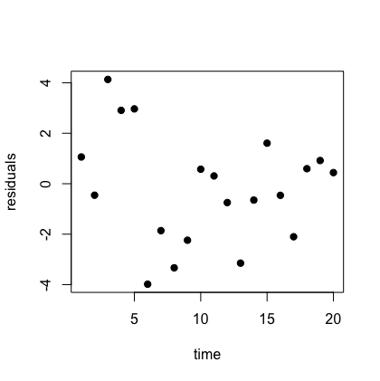
Figure 8 - A residual plot across time indicating autocorrelation
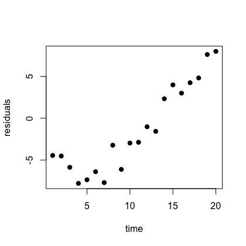
Assessing and Addressing Violations
We can check this assumption by plotting residuals against a variable that reflects the data’s actual dependence structure (e.g., time for a time series, a grouping variable for clustered units), or with a formal test like the Durbin-Watson test (Hothorn et al. 2024b) or the Breusch-Godfrey test (Mitchell and Zeileis 2025).
Our CASchools data are cross-sectional, but there could be clustering: districts within the same county might share local economic conditions that correlate their errors. CASchools includes a county variable — our 420 districts are nested within 45 counties — so we can check this directly with cluster-robust standard errors (Zeileis, Köll, and Graham 2020):
# conventional vs. cluster-robust standard errors on `read`, clustered by countyse_conventional <-coef(summary(model_math_read))["read", "Std. Error"]vcov_cluster <-vcovCL(model_math_read, cluster = CASchools$county)se_clustered <-sqrt(diag(vcov_cluster))["read"]coeftest(model_math_read)
t test of coefficients:
Estimate Std. Error t value Pr(>|t|)
(Intercept) 89.565797 11.509842 7.7817 5.667e-14 ***
read 0.860767 0.017565 49.0052 < 2.2e-16 ***
---
Signif. codes: 0 '***' 0.001 '**' 0.01 '*' 0.05 '.' 0.1 ' ' 1
coeftest(model_math_read, vcov = vcov_cluster)
t test of coefficients:
Estimate Std. Error t value Pr(>|t|)
(Intercept) 89.565797 15.211060 5.8882 8.028e-09 ***
read 0.860767 0.023663 36.3763 < 2.2e-16 ***
---
Signif. codes: 0 '***' 0.001 '**' 0.01 '*' 0.05 '.' 0.1 ' ' 1
import statsmodels.api as smmodel_math_read = sm.OLS.from_formula("math ~ read", data=CASchools).fit()model_math_read_cl = sm.OLS.from_formula("math ~ read", data=CASchools).fit( cov_type="cluster", cov_kwds={"groups": CASchools["county"]})# conventional vs. cluster-robust standard errors on `read`, clustered by countymodel_math_read.bse["read"], model_math_read_cl.bse["read"]
quietly import delimited "ca-schools.csv", clear* conventional vs. cluster-robust standard errors on `read`, clustered by countyregress math readregress math read, vce(cluster county)
Source | SS df MS Number of obs = 420
-------------+---------------------------------- F(1, 418) = 2401.51
Model | 125522.592 1 125522.592 Prob > F = 0.0000
Residual | 21848.13 418 52.2682536 R-squared = 0.8517
-------------+---------------------------------- Adj R-squared = 0.8514
Total | 147370.722 419 351.720099 Root MSE = 7.2297
------------------------------------------------------------------------------
math | Coefficient Std. err. t P>|t| [95% conf. interval]
-------------+----------------------------------------------------------------
read | .8607668 .0175648 49.01 0.000 .8262404 .8952931
_cons | 89.5658 11.50984 7.78 0.000 66.94141 112.1902
------------------------------------------------------------------------------
Linear regression Number of obs = 420
F(1, 44) = 1323.24
Prob > F = 0.0000
R-squared = 0.8517
Root MSE = 7.2297
(Std. err. adjusted for 45 clusters in county)
------------------------------------------------------------------------------
| Robust
math | Coefficient std. err. t P>|t| [95% conf. interval]
-------------+----------------------------------------------------------------
read | .8607668 .0236628 36.38 0.000 .8130775 .908456
_cons | 89.5658 15.21106 5.89 0.000 58.90992 120.2217
------------------------------------------------------------------------------
usingGLM, DataFrames, CovarianceMatricesmodel_math_read =lm(@formula(math ~ read), CASchools)# conventional vs. cluster-robust standard errors on `read`, clustered by countyse_conventional =stderror(model_math_read)se_clustered =stderror(model_math_read, CRHC1(CASchools.county))(se_conventional, se_clustered)
I suspect my regression errors are correlated within groups defined by
[cluster variable] in my dataset [dataset name].
Model: [outcome] ~ [predictor(s)]
Cluster variable: [cluster variable]
Number of clusters: G = [N]
1. Show me the code to compute cluster-robust standard errors in
[R / Python / Stata / Julia].
2. Compare the clustered SE on [key coefficient] to the conventional one.
3. With G = [N] clusters, are cluster-robust SEs reliable here, or should
I consider a wild cluster bootstrap instead?
The coefficient is unchanged, but the clustered SE on read (0.024) is about 35% larger than the conventional SE (0.018) — evidence that districts in the same county really do share correlated errors and that the conventional formula was overstating precision. The substantive conclusion doesn’t change, but the gap illustrates why conventional SEs shouldn’t be trusted once a plausible clustering structure exists — independent of the homoskedasticity issue found earlier. With only 45 clusters, this is on the low end of what’s typically recommended for cluster-robust inference to behave well — the same “adequate number of clusters” caveat noted for robust SEs above applies here too.
There is no single remedy for correlated errors beyond the clustered-SE case demonstrated here; the right choice depends on the source of dependence — HAC SEs, generalized least squares, panel models, or mixed-effects models. An autoregressive model (Burant 2022) is one option among these, suited specifically to time-series dependence.
Linear Independence of the Predictor Variables
This assumption applies when there is more than one predictor variable (i.e., when fitting a multiple linear regression model). Linear independence of the predictor variables is the assumption that no predictor variable can be expressed as an exact linear combination of the others. Two versions of this problem are often lumped together:
Exact collinearity — one predictor is a perfect linear combination of the others (e.g., including both a variable and a constant multiple of it, or a full set of dummy variables plus an intercept) — makes \(\mathbf{X}^T\mathbf{X}\) singular, so a unique OLS solution does not exist at all; lm() will typically drop a variable automatically or return NA for its coefficient (see Blackwell (2026), chapter 7, on the full-rank condition).
High collinearity — predictors are strongly but not perfectly correlated — does not prevent estimation and does not by itself bias the coefficients. What it does is inflate their variance: with highly correlated predictors, many different combinations of coefficients fit the data almost equally well, so small changes in the sample can produce large swings in the estimated coefficients, even though the model’s overall fit and predictions remain stable.
When this second, milder problem occurs, it is referred to as multicollinearity.
Assessing and Addressing Violations
Since we only have one predictor variable in our current model, this assumption is not relevant to it — but it becomes relevant to the multiple-regression models we fit later in this guide. We can check for collinearity by calculating a correlation matrix of all pairwise correlations between predictor variables. A value of exactly 1 or -1 indicates perfect (exact) collinearity; a value close to 1 indicates high collinearity.
We can also calculate the Variance Inflation Factor to determine how much the variance of a regression coefficient is increased due to multicollinearity (Thompson et al. 2017). A high VIF, such as VIF \(>5\), indicates high multicollinearity — but a high VIF is a signal to investigate, not a mechanical trigger for action. Dropping a predictor because its VIF crosses some threshold changes the estimand: the remaining coefficients are no longer estimates of “the effect of \(X_1\) holding \(X_2\) constant,” since \(X_2\) is no longer in the model, and if the dropped variable is a genuine confounder, removing it can introduce omitted-variable bias that is worse than the variance inflation it was meant to fix. A high VIF is better treated as a prompt to ask whether both predictors are needed for the substantive question being asked, or to check whether the imprecise coefficients still support the conclusions the analysis relies on — not as a rule to mechanically drop whichever variable has the highest VIF.
Summarizing the Simple Model
The linearity and independence checks raised no concerns, and the model shows a clear positive relationship between reading and math scores: every one-point increase in district-average reading score is associated with an expected 0.861-point increase in district-average math score. The Breusch-Pagan test did find evidence against homoskedasticity, however, so while we can trust the coefficient itself, the default standard errors, t-values, and p-values cannot be trusted as computed — any claim about statistical significance should instead use the HC3-robust or county-clustered SEs computed above, not the default summary output. With that caveat in mind, the fitted equation can still be used to predict a district’s math score from its reading score, though the next sections attach honest uncertainty to that prediction rather than treating it as exact.
Extending the Model
So far, we have only considered how to use OLS regression to model the relationship between a continuous predictor variable (i.e., district-average reading score) and a continuous outcome variable (i.e., district-average math score). However, OLS regression can also be used to model the relationship between a categorical predictor variable and a continuous outcome variable, between an outcome and several predictors at once, and between predictors whose relationship with the outcome depends on each other. This section extends the specification-and-fit stage to each of these in turn, using the same diagnostic and interpretive habits established above.
Categorical Predictors
OLS with a categorical predictor is closely related to other familiar tools: a t-test when the predictor has two levels, and ANOVA when it has more than two.
Our grades variable indicates whether a district spans Kindergarten through 6th grade or Kindergarten through 8th grade. Before fitting a model, let’s look at the two groups descriptively.
# Distributions of math scores for districts that span different gradesCASchools %>%ggplot(aes(x = math, fill = grades)) +geom_density(alpha =0.5) +labs(title ="Density Plot of Math Scores by District Grade Span",x ="Math Test Score", y ="Density") +theme_minimal() +scale_fill_manual(values =c("KK-06"="lightblue", "KK-08"="salmon"),name ="District Grade Span",labels =c("KK-06"="K-6", "KK-08"="K-8"))
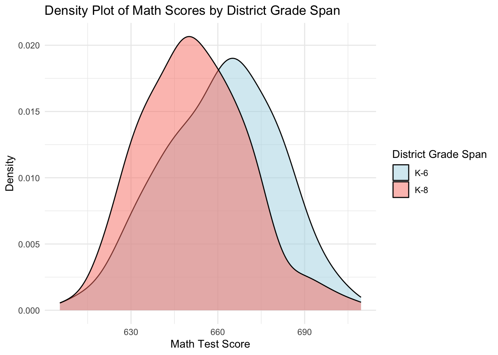
import matplotlib.pyplot as plt# distributions of math scores for districts that span different gradesfor grade, color, label in [("KK-06", "lightblue", "K-6"), ("KK-08", "salmon", "K-8")]: CASchools.loc[CASchools["grades"] == grade, "math"].plot( kind="density", color=color, alpha=0.5, label=label)plt.xlabel("Math Test Score")plt.ylabel("Density")plt.title("Density Plot of Math Scores by District Grade Span")plt.legend(title="District Grade Span")plt.show()
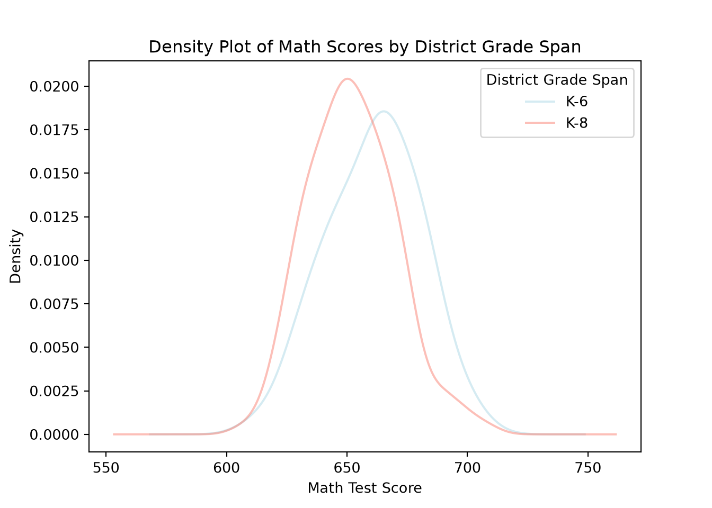
quietly import delimited "ca-schools.csv", clear* distributions of math scores for districts that span different gradestwoway (kdensity math if grades == "KK-06", color(ltblue%50)) /// (kdensity math if grades == "KK-08", color("250 128 114%50")), ///title("Density Plot of Math Scores by District Grade Span") ///xtitle("Math Test Score") ytitle("Density") ///legend(order(1 "K-6" 2 "K-8") title("District Grade Span"))
usingStatsPlots# distributions of math scores for districts that span different gradesk6 =filter(row -> row.grades =="KK-06", CASchools).mathk8 =filter(row -> row.grades =="KK-08", CASchools).mathdensity(k6, color =:lightblue, fillalpha =0.5, fill =true, label ="K-6", xlabel ="Math Test Score", ylabel ="Density", title ="Density Plot of Math Scores by District Grade Span")density!(k8, color =:salmon, fillalpha =0.5, fill =true, label ="K-8")
Plot overlapping density curves of [outcome variable] for each level of
[categorical variable] in my dataset [dataset name], using
[R / Python / Stata / Julia]. Use distinct colors per group and label the
legend clearly.
K-6 districts have slightly higher math scores on average, but there’s substantial within-group variability and overlap between the two distributions. Note that density plots visualize variability and overlap more clearly than bar graphs do.
The means and standard deviations for each group are as follows:
# means and standard deviations of math scores for the districts that span different gradesCASchools %>%group_by(grades) %>%summarise(mean_math =mean(math), sd_math =sd(math)) %>% knitr::kable(caption ="Table 2 -Means and Standard Deviations of Math Scores for K-6 vs K-8 Districts",col.names =c("District Grade Span","Mean Math Score","SD of Math Score"))
Table 2 - Means and Standard Deviations of Math Scores for K-6 vs K-8 Districts
District Grade Span
Mean Math Score
SD of Math Score
KK-06
661.0754
19.38324
KK-08
652.0287
18.35107
# means and standard deviations of math scores for the districts that span different gradesCASchools.groupby("grades")["math"].agg(["mean", "std"])
mean std
grades
KK-06 661.075408 19.383243
KK-08 652.028690 18.351075
quietly import delimited "ca-schools.csv", clear* means and standard deviationsof math scores for the districts that span different gradestable grades, statistic(mean math) statistic(sd math)
| Mean Standard deviation
--------+-------------------------------
grades |
KK-06 | 661.0754 19.38324
KK-08 | 652.0287 18.35107
Total | 653.3426 18.7542
----------------------------------------
usingDataFrames, Statistics# means and standard deviations of math scores for the districts that span different gradescombine(groupby(CASchools, :grades), :math => mean =>:mean_math, :math => std =>:sd_math)
Compute the mean and standard deviation of [outcome variable] for each
level of [categorical variable] in my dataset [dataset name], using
[R / Python / Stata / Julia], displayed as a summary table.
# difference in mean math score between K-6 and K-8 districtsmean(CASchools$math[CASchools$grades =="KK-06"]) -mean(CASchools$math[CASchools$grades =="KK-08"])
[1] 9.046718
# difference in mean math score between K-6 and K-8 districts(CASchools.loc[CASchools["grades"] =="KK-06", "math"].mean() - CASchools.loc[CASchools["grades"] =="KK-08", "math"].mean())
np.float64(9.046718001490945)
quietly import delimited "ca-schools.csv", clear* difference inmean math score between K-6 and K-8 districtsquietlysummarize math if grades == "KK-06"local mean_k6 = r(mean)quietlysummarize math if grades == "KK-08"local mean_k8 = r(mean)display`mean_k6' - `mean_k8'
9.046718
usingStatistics# difference in mean math score between K-6 and K-8 districtsmean(CASchools.math[CASchools.grades .=="KK-06"]) -mean(CASchools.math[CASchools.grades .=="KK-08"])
Compute the difference in mean [outcome variable] between two groups
defined by [categorical variable] == [group A] and == [group B] in my
dataset [dataset name], using [R / Python / Stata / Julia].
This is descriptive information about the relationship between grade span and math scores. A first pass at inference comes from a t-test:
# t-test for difference in math scores between K-6 and K-8 districtst.test(math ~ grades, data = CASchools)
Welch Two Sample t-test
data: math by grades
t = 3.3958, df = 79.359, p-value = 0.001071
alternative hypothesis: true difference in means between group KK-06 and group KK-08 is not equal to 0
95 percent confidence interval:
3.744404 14.349032
sample estimates:
mean in group KK-06 mean in group KK-08
661.0754 652.0287
from scipy import stats# t-test for difference in math scores between K-6 and K-8 districts (Welch)k6 = CASchools.loc[CASchools["grades"] =="KK-06", "math"]k8 = CASchools.loc[CASchools["grades"] =="KK-08", "math"]stats.ttest_ind(k6, k8, equal_var=False)
usingHypothesisTests# t-test for difference in math scores between K-6 and K-8 districts (Welch)k6 = CASchools.math[CASchools.grades .=="KK-06"]k8 = CASchools.math[CASchools.grades .=="KK-08"]UnequalVarianceTTest(k6, k8)
Run a two-sample t-test comparing [outcome variable] between two groups
defined by [categorical variable] in my dataset [dataset name], using
[R / Python / Stata / Julia]. Use Welch's t-test (unequal variances) by
default, and explain why that's usually the safer choice over the pooled
(equal-variance) t-test.
The large t-value and small p-value indicate a significant difference in math scores between K-6 and K-8 districts at the population level — and since K-6’s mean is higher, K-6 districts have higher district-average math scores than K-8 districts at the population level.
The group means match what we calculated manually. The t-statistic can also be recovered directly from the means and standard deviations of the two groups and the following formula:
# t-statistic recovered from the two groups' means and standard deviationst_recovered <- (mean(CASchools$math[CASchools$grades =="KK-06"]) -mean(CASchools$math[CASchools$grades =="KK-08"])) /sqrt(sd(CASchools$math[CASchools$grades =="KK-06"])^2/length(CASchools$math[CASchools$grades =="KK-06"]) +sd(CASchools$math[CASchools$grades =="KK-08"])^2/length(CASchools$math[CASchools$grades =="KK-08"]) )t_recovered
[1] 3.395833
import numpy as np# t-statistic recovered from the two groups' means and standard deviationsk6 = CASchools.loc[CASchools["grades"] =="KK-06", "math"]k8 = CASchools.loc[CASchools["grades"] =="KK-08", "math"]t_recovered = (k6.mean() - k8.mean()) / np.sqrt(k6.std()**2/len(k6) + k8.std()**2/len(k8))t_recovered
np.float64(3.3958334072769087)
quietly import delimited "ca-schools.csv", clear* t-statistic recovered from the two groups' means and standard deviationsquietlysummarize math if grades == "KK-06"local mean_k6 = r(mean)local sd_k6 = r(sd)local n_k6 = r(N)quietlysummarize math if grades == "KK-08"local mean_k8 = r(mean)local sd_k8 = r(sd)local n_k8 = r(N)display (`mean_k6' - `mean_k8') / sqrt(`sd_k6'^2/`n_k6' + `sd_k8'^2/`n_k8')
3.3958334
usingStatistics# t-statistic recovered from the two groups' means and standard deviationsk6 = CASchools.math[CASchools.grades .=="KK-06"]k8 = CASchools.math[CASchools.grades .=="KK-08"]t_recovered = (mean(k6) -mean(k8)) /sqrt(std(k6)^2/length(k6) +std(k8)^2/length(k8))
For a two-sample comparison of [outcome variable] between groups [group A]
and [group B], show me how to compute the t-statistic directly from each
group's mean, standard deviation, and sample size (the Welch formula), in
[R / Python / Stata / Julia], and confirm it matches the t-statistic from
a built-in t-test function.
How does this relate to OLS? Plotting grade span against math score, with a line connecting the two group means, previews what the regression coefficient will represent:
# relevel of grades so the lower-mean group (K-8) is the reference levelCASchools <- CASchools %>%mutate(grades =factor(grades, levels =c("KK-08", "KK-06")))# scatterplot of district-average math scores by district grade span with line connecting group meansCASchools %>%ggplot(aes(x = grades, y = math)) +geom_jitter(width =0.1, alpha =0.5) +stat_summary(fun = mean, geom ="point", size =3, color ="red") +stat_summary(aes(group =1), fun = mean, geom ="line", color ="red") +labs(title ="Math Scores by District Grade Span",x ="District Grade Span",y ="Math Test Score" ) +scale_x_discrete(labels =c("KK-08"="K-8", "KK-06"="K-6")) +theme_minimal()
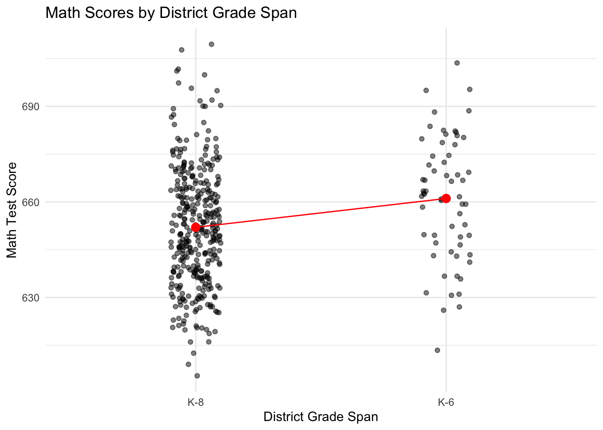
import numpy as npimport matplotlib.pyplot as plt# relevel of grades so the lower-mean group (K-8) is the reference levelCASchools["grades"] = pd.Categorical(CASchools["grades"], categories=["KK-08", "KK-06"])# scatterplot of district-average math scores by district grade span with line connecting group meansgroup_means = CASchools.groupby("grades", observed=True)["math"].mean()x_positions = {"KK-08": 0, "KK-06": 1}x_base = CASchools["grades"].map(x_positions).astype(float)jitter_x = x_base + np.random.uniform(-0.1, 0.1, size=len(CASchools))plt.scatter(jitter_x, CASchools["math"], alpha=0.5)plt.plot([0, 1], group_means.reindex(["KK-08", "KK-06"]), color="red", marker="o", markersize=8)plt.xticks([0, 1], ["K-8", "K-6"])
([<matplotlib.axis.XTick object at 0x14fd264e0>, <matplotlib.axis.XTick object at 0x14fd25400>], [Text(0, 0, 'K-8'), Text(1, 0, 'K-6')])
plt.xlabel("District Grade Span")plt.ylabel("Math Test Score")plt.title("Math Scores by District Grade Span")plt.show()
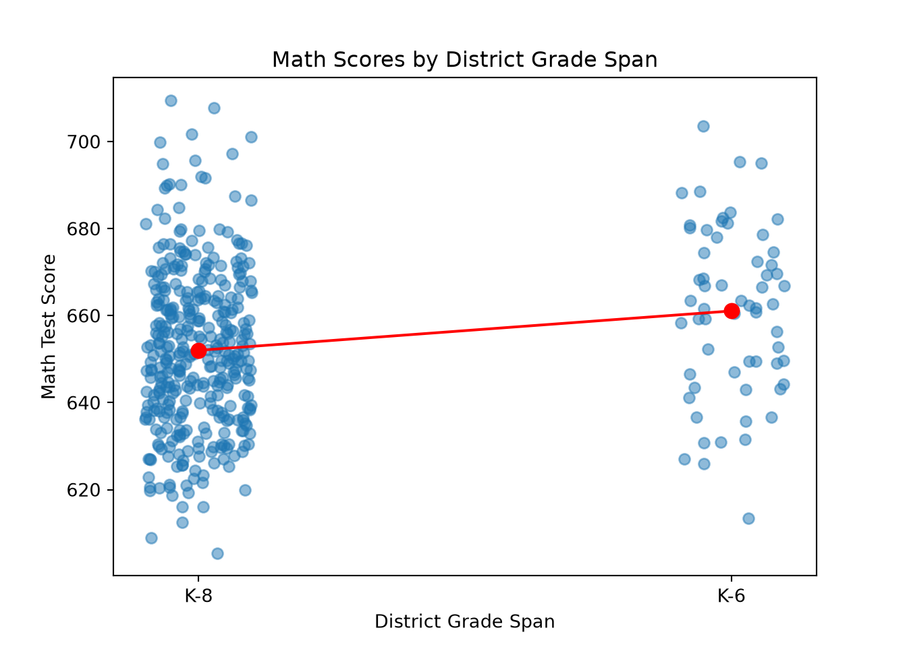
quietly import delimited "ca-schools.csv", clear* relevel of grades so K-8 appears first, then jittered scatter with groupmeans connectedgen grades_num = 1 if grades == "KK-08"replace grades_num = 2 if grades == "KK-06"labeldefine grades_lbl 1 "K-8" 2 "K-6"labelvalues grades_num grades_lblegen mean_math = mean(math), by(grades_num)* scatterplot of district-average math scores by district grade span with line connecting groupmeanstwoway (scatter math grades_num, jitter(5) msymbol(circle) mcolor(%50)) /// (line mean_math grades_num, sort lcolor(red) lwidth(medthick)) /// (scatter mean_math grades_num, msymbol(circle) mcolor(red) msize(medlarge)), ///xlabel(1 "K-8" 2 "K-6") ///title("Math Scores by District Grade Span") ///xtitle("District Grade Span") ytitle("Math Test Score") ///legend(off)
(61 missing values generated)
(61 real changes made)
usingCategoricalArrays, DataFrames, StatsPlots, Statistics# relevel of grades so the lower-mean group (K-8) is the reference levelCASchools.grades =categorical(CASchools.grades, levels = ["KK-08", "KK-06"])# scatterplot of district-average math scores by district grade span with line connecting group meansgroup_means =combine(groupby(CASchools, :grades), :math => mean =>:mean_math)x_positions =Dict("KK-08"=>1, "KK-06"=>2)jitter_x = [x_positions[g] +0.1* (rand() -0.5) for g in CASchools.grades]scatter(jitter_x, CASchools.math, alpha =0.5, legend =false, xticks = (1:2, ["K-8", "K-6"]), xlabel ="District Grade Span", ylabel ="Math Test Score", title ="Math Scores by District Grade Span")plot!([1, 2], [group_means.mean_math[group_means.grades .=="KK-08"][1], group_means.mean_math[group_means.grades .=="KK-06"][1]], color =:red, marker =:circle, markersize =6)
Create a jittered scatterplot of [outcome variable] by [categorical
variable] in my dataset [dataset name], using [R / Python / Stata / Julia],
with each group's mean marked and a line connecting the group means.
Order the groups so [specific level] appears first on the x-axis.
# OLS model of math score on grades (K-8 is the reference level after releveling above)model_math_grades <-lm(math ~ grades, data = CASchools)summary(model_math_grades)
Call:
lm(formula = math ~ grades, data = CASchools)
Residuals:
Min 1Q Median 3Q Max
-47.675 -13.754 -0.479 12.096 57.471
Coefficients:
Estimate Std. Error t value Pr(>|t|)
(Intercept) 652.0287 0.9765 667.693 < 2e-16 ***
gradesKK-06 9.0467 2.5624 3.531 0.000461 ***
---
Signif. codes: 0 '***' 0.001 '**' 0.01 '*' 0.05 '.' 0.1 ' ' 1
Residual standard error: 18.5 on 418 degrees of freedom
Multiple R-squared: 0.02896, Adjusted R-squared: 0.02663
F-statistic: 12.46 on 1 and 418 DF, p-value: 0.0004608
import statsmodels.api as smCASchools["grades"] = pd.Categorical(CASchools["grades"], categories=["KK-08", "KK-06"])# OLS model of math score on grades (K-8 is the reference level)model_math_grades = sm.OLS.from_formula("math ~ grades", data=CASchools).fit()print(model_math_grades.summary())
quietly import delimited "ca-schools.csv", clear* OLS modelof math scoreon grades (K-8 is the reference level)gen grades_num = 1 if grades == "KK-08"replace grades_num = 2 if grades == "KK-06"labeldefine grades_lbl 1 "K-8" 2 "K-6"labelvalues grades_num grades_lblregress math ib1.grades_num
(61 missing values generated)
(61 real changes made)
Source | SS df MS Number of obs = 420
-------------+---------------------------------- F(1, 418) = 12.46
Model | 4267.33855 1 4267.33855 Prob > F = 0.0005
Residual | 143103.383 418 342.352591 R-squared = 0.0290
-------------+---------------------------------- Adj R-squared = 0.0266
Total | 147370.722 419 351.720099 Root MSE = 18.503
------------------------------------------------------------------------------
math | Coefficient Std. err. t P>|t| [95% conf. interval]
-------------+----------------------------------------------------------------
grades_num |
K-6 | 9.046718 2.562414 3.53 0.000 4.009895 14.08354
_cons | 652.0287 .976539 667.69 0.000 650.1092 653.9482
------------------------------------------------------------------------------
usingGLM, DataFrames, CategoricalArraysCASchools.grades =categorical(CASchools.grades, levels = ["KK-08", "KK-06"])# OLS model of math score on grades (K-8 is the reference level)model_math_grades =lm(@formula(math ~ grades), CASchools)
Fit an OLS regression of [outcome variable] on a categorical predictor
[categorical variable] in my dataset [dataset name], using
[R / Python / Stata / Julia], with [specific level] set as the reference
category. Explain how the intercept and slope relate to the two groups'
means.
The estimated intercept, 652.028, is exactly the mean math score for the reference group (K-8 districts). The estimated slope, 9.047, is exactly the difference in means between K-6 and K-8 districts — the same number we calculated manually and got from the t-test (see Blackwell (2026), chapter 7, on binary regressors). This exact equivalence holds only because grades is the model’s sole predictor; once another predictor joins it (see Pressure-Testing an Interaction below), the grades coefficient stops being the raw difference in group means and becomes a comparison that holds the other predictor fixed.
As with the continuous model, the slope’s t-value and p-value support inference to the population level: the large t-value and small p-value (\(p < .001\)) indicate the slope — equivalently, the gap between the group means — is significantly different from 0, so K-6 districts have higher district-average math scores than K-8 districts at the population level.
The t-value and p-value here are not exactly the same as the earlier t-test’s, even though both test whether the difference in means is zero. This is because the two use different standard-error formulas. The t-test’s default does not assume equal variances between groups; the regression’s does.
Telling t.test that the variances of the two groups are equal recovers the regression’s exact t-value and p-value:
# t-test for difference in math scores between K-6 and K-8 districts with equal variancest.test(math ~ grades, data = CASchools, var.equal =TRUE)
Two Sample t-test
data: math by grades
t = -3.5305, df = 418, p-value = 0.0004608
alternative hypothesis: true difference in means between group KK-08 and group KK-06 is not equal to 0
95 percent confidence interval:
-14.083541 -4.009895
sample estimates:
mean in group KK-08 mean in group KK-06
652.0287 661.0754
from scipy import stats# t-test for difference in math scores between K-6 and K-8 districts with equal# variances (K-8 minus K-6, matching R's group order after releveling above)k8 = CASchools.loc[CASchools["grades"] =="KK-08", "math"]k6 = CASchools.loc[CASchools["grades"] =="KK-06", "math"]stats.ttest_ind(k8, k6, equal_var=True)
quietly import delimited "ca-schools.csv", clear* t-testfor difference in math scores between K-6 and K-8 districts with equal variancesttest math, by(grades)
usingHypothesisTests# t-test for difference in math scores between K-6 and K-8 districts with equal variancesk8 = CASchools.math[CASchools.grades .=="KK-08"]k6 = CASchools.math[CASchools.grades .=="KK-06"]EqualVarianceTTest(k8, k6)
Run a two-sample t-test comparing [outcome variable] between two groups
defined by [categorical variable] in my dataset [dataset name], using
[R / Python / Stata / Julia], this time assuming equal variances (the
pooled/Student's t-test). Compare the resulting t-statistic and p-value
to Welch's version and explain why they differ.
However, unless equal variances are substantively defensible on their own terms, Welch’s test — R’s default — is the safer choice.
Multiple Predictors
OLS extends naturally to multiple predictors — continuous, categorical, or both. Fitting a multiple regression is easy, but interpreting it correctly requires us to consider two issues.
First, adding a predictor changes what every other coefficient means. The grades coefficient in our simple regression was exactly the difference in group means; with another predictor added, it becomes a conditional comparison — the difference holding the other predictor fixed — a different question (see Covariates and Pressure-Testing an Interaction below).
Second, deciding which predictors to include should not be left to a mechanical search procedure. Stepwise regression (forward, backward, or both) is a common default in introductory treatments, but a poor one: it repeatedly tests many candidate models against the same data, inflating false positives, producing selections unstable to small changes in the data, and invalidating the standard errors and p-values reported for the final model. Pre-register hypotheses and analysis plans instead, and choose predictors using substantive knowledge of their causal role — confounder, mediator, collider, instrument, or precision variable — rather than a mechanical search. See our variable-selection guide for how to reason through that choice.
For comparing a small number of candidate models directly, a partial F-test (or the equivalent nested likelihood-ratio test) tests the joint null that a specific set of added coefficients are all exactly zero, under the same conditions as the rest of this guide’s inference (see OLS and the Gauss–Markov Theorem above) — and only applies to nested models. AIC and BIC compare models, nested or not, by penalizing in-sample fit for parameter count, but stay in-sample. Cross-validation is the only one that estimates out-of-sample performance directly (see the held-out comparison later in this guide). A partial F-test and AIC/BIC ask whether a more complex model fits the observed data better; cross-validation asks whether it predicts new data better.
With those caveats in mind, here are the benefits of multiple linear regression.
Covariates
Our simple regression found a positive relationship between reading and math scores. This could partly reflect a common cause: districts with higher reading scores may also tend to have higher average income, and income could plausibly relate to math scores too. If income is a confounder — a common cause of both — the simple read coefficient partly reflects that shared association, not the reading-math relationship alone. Whether income (or any variable) belongs in the model depends on its causal role: confounders, mediators, colliders, instruments, and precision variables each change the resulting coefficient differently, and not always for the better (see our variable-selection guide, and Blackwell (2026), chapter 6, for the formal omitted-variable-bias result).
# OLS model of math score on reading score and incomemodel_math_read_SES <-lm(math ~ read + income, data = CASchools)summary(model_math_read_SES)
Call:
lm(formula = math ~ read + income, data = CASchools)
Residuals:
Min 1Q Median 3Q Max
-24.8890 -4.4845 -0.0684 4.5075 25.0698
Coefficients:
Estimate Std. Error t value Pr(>|t|)
(Intercept) 131.28869 15.05972 8.718 < 2e-16 ***
read 0.79051 0.02405 32.867 < 2e-16 ***
income 0.28016 0.06693 4.186 3.47e-05 ***
---
Signif. codes: 0 '***' 0.001 '**' 0.01 '*' 0.05 '.' 0.1 ' ' 1
Residual standard error: 7.091 on 417 degrees of freedom
Multiple R-squared: 0.8577, Adjusted R-squared: 0.857
F-statistic: 1257 on 2 and 417 DF, p-value: < 2.2e-16
import statsmodels.api as sm# OLS model of math score on reading score and incomemodel_math_read_SES = sm.OLS.from_formula("math ~ read + income", data=CASchools).fit()print(model_math_read_SES.summary())
OLS Regression Results
==============================================================================
Dep. Variable: math R-squared: 0.858
Model: OLS Adj. R-squared: 0.857
Method: Least Squares F-statistic: 1257.
Date: Wed, 19 Aug 2026 Prob (F-statistic): 2.67e-177
Time: 14:37:44 Log-Likelihood: -1417.2
No. Observations: 420 AIC: 2840.
Df Residuals: 417 BIC: 2852.
Df Model: 2
Covariance Type: nonrobust
==============================================================================
coef std err t P>|t| [0.025 0.975]
------------------------------------------------------------------------------
Intercept 131.2887 15.060 8.718 0.000 101.686 160.891
read 0.7905 0.024 32.867 0.000 0.743 0.838
income 0.2802 0.067 4.186 0.000 0.149 0.412
==============================================================================
Omnibus: 6.896 Durbin-Watson: 1.875
Prob(Omnibus): 0.032 Jarque-Bera (JB): 9.448
Skew: -0.112 Prob(JB): 0.00888
Kurtosis: 3.700 Cond. No. 2.85e+04
==============================================================================
Notes:
[1] Standard Errors assume that the covariance matrix of the errors is correctly specified.
[2] The condition number is large, 2.85e+04. This might indicate that there are
strong multicollinearity or other numerical problems.
quietly import delimited "ca-schools.csv", clear* OLS modelof math scoreon reading score and incomeregress math read income
Source | SS df MS Number of obs = 420
-------------+---------------------------------- F(2, 417) = 1256.97
Model | 126403.559 2 63201.7795 Prob > F = 0.0000
Residual | 20967.1626 417 50.2809656 R-squared = 0.8577
-------------+---------------------------------- Adj R-squared = 0.8570
Total | 147370.722 419 351.720099 Root MSE = 7.0909
------------------------------------------------------------------------------
math | Coefficient Std. err. t P>|t| [95% conf. interval]
-------------+----------------------------------------------------------------
read | .7905133 .0240518 32.87 0.000 .7432355 .8377911
income | .2801575 .0669305 4.19 0.000 .1485942 .4117207
_cons | 131.2887 15.05972 8.72 0.000 101.6863 160.8911
------------------------------------------------------------------------------
usingGLM, DataFrames# OLS model of math score on reading score and incomemodel_math_read_SES =lm(@formula(math ~ read + income), CASchools)
Fit an OLS regression of [outcome variable] on [predictor 1] and
[predictor 2] in my dataset [dataset name], using
[R / Python / Stata / Julia]. Explain how adding [predictor 2] changes
the interpretation of the coefficient on [predictor 1] compared to a
simple regression with only [predictor 1].
The read slope decreased from 0.861 to 0.791 after adjusting for income. A covariate changes the conditional comparison: the simple coefficient describes covariation across all districts, while the adjusted coefficient describes it among districts with similar income. A smaller adjusted coefficient is consistent with income explaining part of the association (although it is not direct evidence of it). Comparing the two estimates side by side, on the same sample, is more informative than the change alone:
# comparing the simple and adjusted coefficient on `read`, on the same sampledata.frame(model =c("Simple (read only)", "Adjusted (read + income)"),n =c(nobs(model_math_read), nobs(model_math_read_SES)),estimate =c(coef(model_math_read)["read"], coef(model_math_read_SES)["read"]),se =c(coef(summary(model_math_read))["read", "Std. Error"],coef(summary(model_math_read_SES))["read", "Std. Error"]),ci_low =c(confint(model_math_read)["read", 1], confint(model_math_read_SES)["read", 1]),ci_high =c(confint(model_math_read)["read", 2], confint(model_math_read_SES)["read", 2]))
model n estimate se ci_low ci_high
1 Simple (read only) 420 0.8607668 0.01756481 0.8262404 0.8952931
2 Adjusted (read + income) 420 0.7905133 0.02405177 0.7432355 0.8377911
import pandas as pd# comparing the simple and adjusted coefficient on `read`, on the same samplepd.DataFrame({"model": ["Simple (read only)", "Adjusted (read + income)"],"n": [int(model_math_read.nobs), int(model_math_read_SES.nobs)],"estimate": [model_math_read.params["read"], model_math_read_SES.params["read"]],"se": [model_math_read.bse["read"], model_math_read_SES.bse["read"]],"ci_low": [model_math_read.conf_int().loc["read", 0], model_math_read_SES.conf_int().loc["read", 0]],"ci_high": [model_math_read.conf_int().loc["read", 1], model_math_read_SES.conf_int().loc["read", 1]],})
model n estimate se ci_low ci_high
0 Simple (read only) 420 0.860767 0.017565 0.826240 0.895293
1 Adjusted (read + income) 420 0.790513 0.024052 0.743235 0.837791
quietly import delimited "ca-schools.csv", clear* comparing the simple and adjusted coefficient on `read`, on the same samplequietlyregress math readlocal b_simple = _b[read]local se_simple = _se[read]quietlyregress math read incomelocal b_adj = _b[read]local se_adj = _se[read]display"Simple (read only): b = " %6.3f `b_simple'" se = " %6.3f `se_simple'display"Adjusted (read + income): b = " %6.3f `b_adj'" se = " %6.3f `se_adj'
Simple (read only): b = 0.861 se = 0.018
Adjusted (read + income): b = 0.791 se = 0.024
usingGLM, DataFramesmodel_math_read =lm(@formula(math ~ read), CASchools)model_math_read_SES =lm(@formula(math ~ read + income), CASchools)# comparing the simple and adjusted coefficient on `read`, on the same sampleDataFrame( model = ["Simple (read only)", "Adjusted (read + income)"], n = [nobs(model_math_read), nobs(model_math_read_SES)], estimate = [coef(model_math_read)[2], coef(model_math_read_SES)[2]], se = [stderror(model_math_read)[2], stderror(model_math_read_SES)[2]],)
I fit two OLS models in [R / Python / Stata / Julia]: a simple regression
of [outcome] on [predictor 1] alone, and an adjusted regression adding
[predictor 2]. Show me how to build a side-by-side comparison table of
the coefficient, standard error, and confidence interval for [predictor 1]
across both models, fit on the same sample. Explain what it means if the
coefficient shrinks and the standard error grows after adjustment.
Both models are fit on the same 420 districts. Adjustment didn’t just move the point estimate — the SE also grew (0.018 to 0.024) and the CI widened. This is a concrete example that adjustment isn’t free: depending on the covariate’s role, it can reduce bias (a genuine confounder) or introduce it (a collider or mediator), and it can separately improve or worsen precision independent of bias. Income’s own coefficient is positive too: higher district-average income is associated with higher district-average math scores, even after accounting for reading scores. Again, this is an adjusted association, not a causal effect.
Multiple regression can also test whether a predictor’s relationship with the outcome depends on another predictor:
Interactions
The reading-math relationship might differ by income — stronger for higher-income districts, or the reverse — which is an example of an interaction between reading score and income in predicting math scores. We add an interaction term using * in the formula:
# OLS model of math score on reading score, income, and their interactionmodel_math_read_SES_interaction <-lm(math ~ read * income, data = CASchools)summary(model_math_read_SES_interaction)
Call:
lm(formula = math ~ read * income, data = CASchools)
Residuals:
Min 1Q Median 3Q Max
-24.9142 -4.3461 0.0413 4.5303 24.1608
Coefficients:
Estimate Std. Error t value Pr(>|t|)
(Intercept) 173.365821 22.578222 7.678 1.16e-13 ***
read 0.729682 0.034186 21.345 < 2e-16 ***
income -3.754163 1.622181 -2.314 0.0211 *
read:income 0.005878 0.002361 2.489 0.0132 *
---
Signif. codes: 0 '***' 0.001 '**' 0.01 '*' 0.05 '.' 0.1 ' ' 1
Residual standard error: 7.047 on 416 degrees of freedom
Multiple R-squared: 0.8598, Adjusted R-squared: 0.8588
F-statistic: 850.5 on 3 and 416 DF, p-value: < 2.2e-16
import statsmodels.api as sm# OLS model of math score on reading score, income, and their interactionmodel_math_read_SES_interaction = sm.OLS.from_formula("math ~ read * income", data=CASchools).fit()print(model_math_read_SES_interaction.summary())
OLS Regression Results
==============================================================================
Dep. Variable: math R-squared: 0.860
Model: OLS Adj. R-squared: 0.859
Method: Least Squares F-statistic: 850.5
Date: Wed, 19 Aug 2026 Prob (F-statistic): 4.95e-177
Time: 14:37:46 Log-Likelihood: -1414.0
No. Observations: 420 AIC: 2836.
Df Residuals: 416 BIC: 2852.
Df Model: 3
Covariance Type: nonrobust
===============================================================================
coef std err t P>|t| [0.025 0.975]
-------------------------------------------------------------------------------
Intercept 173.3658 22.578 7.678 0.000 128.984 217.747
read 0.7297 0.034 21.345 0.000 0.662 0.797
income -3.7542 1.622 -2.314 0.021 -6.943 -0.565
read:income 0.0059 0.002 2.489 0.013 0.001 0.011
==============================================================================
Omnibus: 7.804 Durbin-Watson: 1.917
Prob(Omnibus): 0.020 Jarque-Bera (JB): 10.578
Skew: -0.149 Prob(JB): 0.00505
Kurtosis: 3.718 Cond. No. 7.47e+05
==============================================================================
Notes:
[1] Standard Errors assume that the covariance matrix of the errors is correctly specified.
[2] The condition number is large, 7.47e+05. This might indicate that there are
strong multicollinearity or other numerical problems.
quietly import delimited "ca-schools.csv", clear* OLS modelof math scoreon reading score, income, and their interactionregress math c.read##c.income
Source | SS df MS Number of obs = 420
-------------+---------------------------------- F(3, 416) = 850.49
Model | 126711.239 3 42237.0796 Prob > F = 0.0000
Residual | 20659.4828 416 49.6622183 R-squared = 0.8598
-------------+---------------------------------- Adj R-squared = 0.8588
Total | 147370.722 419 351.720099 Root MSE = 7.0471
---------------------------------------------------------------------------------
math | Coefficient Std. err. t P>|t| [95% conf. interval]
----------------+----------------------------------------------------------------
read | .7296821 .0341856 21.34 0.000 .6624841 .79688
income | -3.754163 1.622181 -2.31 0.021 -6.942857 -.5654692
|
c.read#c.income | .0058775 .0023613 2.49 0.013 .0012359 .0105192
|
_cons | 173.3658 22.57822 7.68 0.000 128.9842 217.7474
---------------------------------------------------------------------------------
usingGLM, DataFrames# OLS model of math score on reading score, income, and their interactionmodel_math_read_SES_interaction =lm(@formula(math ~ read * income), CASchools)
Fit an OLS regression of [outcome] on [predictor 1], [predictor 2], and
their interaction in my dataset [dataset name], using
[R / Python / Stata / Julia]. Explain what the main-effect coefficients
mean once an interaction term is in the model (hint: they are conditional
on the OTHER variable being zero).
It’s tempting to read the read coefficient as “the effect of reading, controlling for income,” and income’s as the reverse — but that’s not what these numbers mean with an interaction in the model. The read coefficient is specifically the slope of readwhen income = 0; the income coefficient is the slope of incomewhen read = 0. Both are far outside our data (income ranges $5.3k–$55.3k; reading score ranges 605–704), so neither main effect should be read as a generic “controlling for” relationship.
The interaction term (read:income\(\approx 0.0059\), \(p \approx .013\)) says the read slope increases with income, distinguishably from constant. But it doesn’t tell us the actual slope at income levels that occur in our data — for that we need the model evaluated at meaningful values of income, not the raw coefficients. Similarly, a nonsignificant interaction wouldn’t have proven the slopes are equal either — failing to reject a null is not the same as confirming it.
We can also compute the model-implied slope of read at meaningful values of income, with uncertainty, using the marginaleffects package (Arel-Bundock, Greifer, and Heiss 2024) (see Blackwell (2026), chapter 6, on interactions, and Blackwell (2013) on heterogeneous effects more generally):
library(marginaleffects)# marginal effect (slope) of `read` on `math`, evaluated at the# 25th, 50th, and 75th percentile of district-average income, using HC3-robust SEsslopes(model_math_read_SES_interaction,variables ="read",newdata =datagrid(income =c(10.64, 13.73, 17.63)),vcov ="HC3")
ModuleNotFoundError: No module named 'marginaleffects'
# marginal effect (slope) of `read` on `math`, evaluated at the# 25th, 50th, and 75th percentile of district-average income, using HC3-robust SEsslopes(model_math_read_SES_interaction, variables="read", newdata=datagrid(model=model_math_read_SES_interaction, income=[10.64, 13.73, 17.63]), vcov="HC3")
NameError: name 'slopes' is not defined
quietly import delimited "ca-schools.csv", clear* OLS model with the interaction, HC3-robust SEsregress math c.read##c.income, vce(hc3)* marginal effect (slope) of read on math, evaluated at the* 25th, 50th, and 75th percentile of district-average incomemargins, dydx(read) at(income = (10.64 13.73 17.63))
Linear regression Number of obs = 420
F(3, 416) = 1047.21
Prob > F = 0.0000
R-squared = 0.8598
Root MSE = 7.0471
---------------------------------------------------------------------------------
| Robust HC3
math | Coefficient std. err. t P>|t| [95% conf. interval]
----------------+----------------------------------------------------------------
read | .7296821 .0299985 24.32 0.000 .6707146 .7886495
income | -3.754163 1.400687 -2.68 0.008 -6.507469 -1.000857
|
c.read#c.income | .0058775 .0020363 2.89 0.004 .0018748 .0098803
|
_cons | 173.3658 19.47144 8.90 0.000 135.0912 211.6405
---------------------------------------------------------------------------------
Average marginal effects Number of obs = 420
Model VCE: Robust HC3
Expression: Linear prediction, predict()
dy/dx wrt: read
1._at: income = 10.64
2._at: income = 13.73
3._at: income = 17.63
------------------------------------------------------------------------------
| Delta-method
| dy/dx std. err. t P>|t| [95% conf. interval]
-------------+----------------------------------------------------------------
read |
_at |
1 | .7922192 .0237731 33.32 0.000 .7454889 .8389495
2 | .8103808 .0253746 31.94 0.000 .7605025 .8602591
3 | .8333032 .0292618 28.48 0.000 .7757838 .8908226
------------------------------------------------------------------------------
usingGLM, DataFrames, CovarianceMatricesmodel_math_read_SES_interaction =lm(@formula(math ~ read * income), CASchools)# marginal effect (slope) of read on math, evaluated at the# 25th, 50th, and 75th percentile of district-average income, using HC3-robust# SEs (manual delta method: slope = b_read + b_interaction * income; no mature# marginaleffects-equivalent package identified for Julia)V = CovarianceMatrices.vcov(HC3(), model_math_read_SES_interaction)b =coef(model_math_read_SES_interaction)b_read, b_interaction = b[2], b[4]for income_val in [10.64, 13.73, 17.63] slope = b_read + b_interaction * income_val se =sqrt(V[2, 2] + income_val^2* V[4, 4] +2* income_val * V[2, 4])println("income = $income_val: slope = $slope, SE = $se")end
I have a fitted OLS model with an interaction between [predictor 1] and
[predictor 2] in [R / Python / Stata / Julia]. Show me how to compute the
model-implied slope of [predictor 1] on [outcome], with a robust standard
error, evaluated at specific values of [predictor 2] (e.g., its 25th,
50th, and 75th percentiles) -- not just the raw interaction coefficient.
At the 25th/50th/75th percentile of income ($10.6k, $13.7k, $17.6k), the estimated read slope is about 0.79, 0.81, and 0.83. This is evidence the interaction is real but modest: the slope shifts only slightly across most of income’s range, and the three CIs overlap considerably. Switching to HC3-robust SEs here barely moves these numbers — a sign that heteroskedasticity was not doing much of the work in this particular model’s uncertainty, even though it clearly mattered for the simple model above. Note that, although the point estimates above match exactly across R and Python’s marginaleffects packages, the HC3 standard errors differ somewhat between them. This is because statsmodels and R’s sandwich package compute the HC3 sandwich correction slightly differently.
A continuous interacting variable can still be hard to visualize, so it helps to plot the reading-math relationship at different levels of income. One common approach bins the interacting variable into categories and plots the relationship separately for each.
# scatterplot of reading and math scores by income category, with a fitted line for eachCASchools %>%mutate(income_cat =cut(income, breaks =3,labels =c("Low", "Medium", "High"))) %>%ggplot(aes(x = read, y = math, color = income_cat)) +geom_point(alpha =0.5) +geom_smooth(method ="lm", se =FALSE) +labs(title ="Interaction Plot of Reading and Math Scores by Income Category",x ="Reading Test Score", y ="Math Test Score", color ="Income Category") +theme_minimal()
import numpy as npimport matplotlib.pyplot as plt# scatterplot of reading and math scores by income category, with a fitted line for eachCASchools["income_cat"] = pd.cut(CASchools["income"], bins=3, labels=["Low", "Medium", "High"])fig, ax = plt.subplots()for cat, color inzip(["Low", "Medium", "High"], ["tab:blue", "tab:orange", "tab:green"]): subset = CASchools[CASchools["income_cat"] == cat] ax.scatter(subset["read"], subset["math"], alpha=0.5, color=color, label=cat) coeffs = np.polyfit(subset["read"], subset["math"], 1) x_line = np.array([subset["read"].min(), subset["read"].max()]) ax.plot(x_line, coeffs[0] * x_line + coeffs[1], color=color)ax.set_xlabel("Reading Test Score")ax.set_ylabel("Math Test Score")ax.set_title("Interaction Plot of Reading and Math Scores by Income Category")ax.legend(title="Income Category")plt.show()
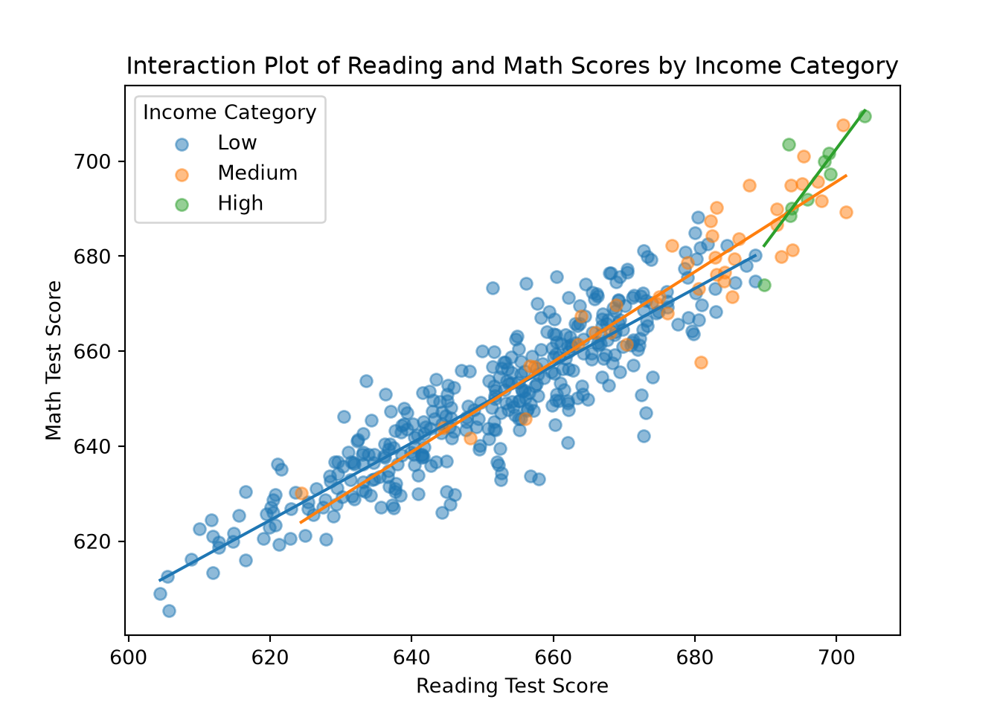
quietly import delimited "ca-schools.csv", clear* scatterplot of reading and math scores by income category, with a fitted* linefor each (equal-width bins, matching R's cut(income, breaks = 3))quietlysummarize incomelocalwidth = (r(max) - r(min)) / 3local cut1 = r(min) + `width'local cut2 = r(min) + 2*`width'gen income_cat = 1 if income <= `cut1'replace income_cat = 2 if income > `cut1' & income <= `cut2'replace income_cat = 3 if income > `cut2'labeldefine income_lbl 1 "Low" 2 "Medium" 3 "High"labelvalues income_cat income_lbltwoway (scatter math read if income_cat == 1, mcolor(blue%50)) /// (lfit math read if income_cat == 1, lcolor(blue)) /// (scatter math read if income_cat == 2, mcolor(orange%50)) /// (lfit math read if income_cat == 2, lcolor(orange)) /// (scatter math read if income_cat == 3, mcolor(green%50)) /// (lfit math read if income_cat == 3, lcolor(green)), ///title("Interaction Plot of Reading and Math Scores by Income Category") ///xtitle("Reading Test Score") ytitle("Math Test Score") ///legend(order(2 "Low" 4 "Medium" 6 "High") title("Income Category"))
(50 missing values generated)
(41 real changes made)
(9 real changes made)
usingStatsPlots, GLM, DataFrames# scatterplot of reading and math scores by income category, with a fitted# line for each (equal-width bins, matching R's cut(income, breaks = 3))min_income, max_income =extrema(CASchools.income)width = (max_income - min_income) /3cut1, cut2 = min_income + width, min_income +2* widthCASchools.income_cat =map(CASchools.income) do x x <= cut1 ? "Low": x <= cut2 ? "Medium":"High"endplt =plot(legend =:outertopright, xlabel ="Reading Test Score", ylabel ="Math Test Score", title ="Interaction Plot of Reading and Math Scores by Income Category")for (cat, color) inzip(["Low", "Medium", "High"], [:blue, :orange, :green]) subset = CASchools[CASchools.income_cat .== cat, :]scatter!(plt, subset.read, subset.math, alpha =0.5, color = color, label = cat) fit =lm(@formula(math ~ read), subset) x_line = [minimum(subset.read), maximum(subset.read)] b0, b1 =coef(fit)plot!(plt, x_line, b0 .+ b1 .* x_line, color = color, label =false)endplt
Plot the relationship between [predictor 1] and [outcome] separately for
[N] equal-width bins of a third variable, [predictor 2], in my dataset
[dataset name], using [R / Python / Stata / Julia]. Show a scatterplot
and a separate fitted line for each bin, with a clear legend.
Districts with higher income show a steeper reading-math relationship, consistent with the significant positive interaction. A few reasons to stay cautious, though:
The regression uses continuous income, but the plot uses a binned version, so it may not perfectly reflect the interaction term.
We haven’t formally checked this model’s assumptions. We should be especially wary of these results, as income variables often violate the assumptions of OLS.
The binning itself is somewhat arbitrary; equal-width bins leave the “high” income category with very few observations, so its line of best fit rests on very little data.
A more illustrative interaction uses the categorical variable we already assessed — district grade span — since it makes the interaction term’s construction easier to follow.
Pressure-Testing an Interaction
Our first two models found a positive reading-math relationship and higher math scores for K-6 districts. A combined model lets us test whether the reading-math relationship survives controlling for grade span and whether that relationship differs by grade span, via an interaction term.
As before, the simple model’s assumption checks don’t carry over — this model has its own fitted values, residuals, and variance patterns, and would need its own checks before trusting its coefficients, SEs, and p-values.
# OLS model of math score on reading score, grade span, and their interactionmodel_math_read_grades_interaction <-lm(math ~ read * grades, data = CASchools)summary(model_math_read_grades_interaction)
Call:
lm(formula = math ~ read * grades, data = CASchools)
Residuals:
Min 1Q Median 3Q Max
-25.9893 -4.4005 0.7159 4.3776 23.3775
Coefficients:
Estimate Std. Error t value Pr(>|t|)
(Intercept) 97.03960 12.57465 7.717 8.92e-14 ***
read 0.84891 0.01923 44.156 < 2e-16 ***
gradesKK-06 -28.04376 32.57334 -0.861 0.390
read:gradesKK-06 0.04536 0.04927 0.921 0.358
---
Signif. codes: 0 '***' 0.001 '**' 0.01 '*' 0.05 '.' 0.1 ' ' 1
Residual standard error: 7.208 on 416 degrees of freedom
Multiple R-squared: 0.8533, Adjusted R-squared: 0.8523
F-statistic: 806.8 on 3 and 416 DF, p-value: < 2.2e-16
import statsmodels.api as smCASchools["grades"] = pd.Categorical(CASchools["grades"], categories=["KK-08", "KK-06"])# OLS model of math score on reading score, grade span, and their interactionmodel_math_read_grades_interaction = sm.OLS.from_formula("math ~ read * grades", data=CASchools).fit()print(model_math_read_grades_interaction.summary())
OLS Regression Results
==============================================================================
Dep. Variable: math R-squared: 0.853
Model: OLS Adj. R-squared: 0.852
Method: Least Squares F-statistic: 806.8
Date: Wed, 19 Aug 2026 Prob (F-statistic): 5.90e-173
Time: 14:37:51 Log-Likelihood: -1423.5
No. Observations: 420 AIC: 2855.
Df Residuals: 416 BIC: 2871.
Df Model: 3
Covariance Type: nonrobust
========================================================================================
coef std err t P>|t| [0.025 0.975]
----------------------------------------------------------------------------------------
Intercept 97.0396 12.575 7.717 0.000 72.322 121.757
grades[T.KK-06] -28.0438 32.573 -0.861 0.390 -92.073 35.985
read 0.8489 0.019 44.156 0.000 0.811 0.887
read:grades[T.KK-06] 0.0454 0.049 0.921 0.358 -0.051 0.142
==============================================================================
Omnibus: 8.813 Durbin-Watson: 1.861
Prob(Omnibus): 0.012 Jarque-Bera (JB): 10.825
Skew: -0.218 Prob(JB): 0.00446
Kurtosis: 3.654 Cond. No. 6.22e+04
==============================================================================
Notes:
[1] Standard Errors assume that the covariance matrix of the errors is correctly specified.
[2] The condition number is large, 6.22e+04. This might indicate that there are
strong multicollinearity or other numerical problems.
quietly import delimited "ca-schools.csv", cleargen grades_num = 1 if grades == "KK-08"replace grades_num = 2 if grades == "KK-06"labeldefine grades_lbl 1 "K-8" 2 "K-6"labelvalues grades_num grades_lbl* OLS modelof math scoreon reading score, grade span, and their interactionregress math c.read##ib1.grades_num
usingGLM, DataFrames, CategoricalArraysCASchools.grades =categorical(CASchools.grades, levels = ["KK-08", "KK-06"])# OLS model of math score on reading score, grade span, and their interactionmodel_math_read_grades_interaction =lm(@formula(math ~ read * grades), CASchools)
Fit an OLS regression of [outcome] on a continuous predictor [predictor],
a categorical predictor [categorical variable], and their interaction in
my dataset [dataset name], using [R / Python / Stata / Julia], with
[specific level] set as the reference category. Explain what the main
effect of the categorical variable means once the interaction is
included.
The reading-math relationship stays significant after controlling for grade span, but grade span’s own main effect is no longer significant. That’s consistent with grade span and reading score sharing some variation, but doesn’t establish that one relationship is “due to” the other — that requires the causal reasoning discussed above, not just a change in significance. The interaction term is also not significant, so the reading-math slope doesn’t differ meaningfully between K-6 and K-8 districts:
# scatterplot of reading and math scores by district grade span, with a fitted line for eachCASchools %>%ggplot(aes(x = read, y = math, color = grades)) +geom_point(alpha =0.5) +geom_smooth(method ="lm", se =FALSE) +labs(title ="Interaction Plot of District-Average Reading and Math Scoresby District Grade Span",x ="District-Average Reading Score", y ="District-Average Math Score", color ="District Grade Span") +scale_color_manual(values =c("KK-06"="lightblue", "KK-08"="salmon"),name ="District Grade Span",labels =c("KK-06"="K-6", "KK-08"="K-8")) +theme_minimal()
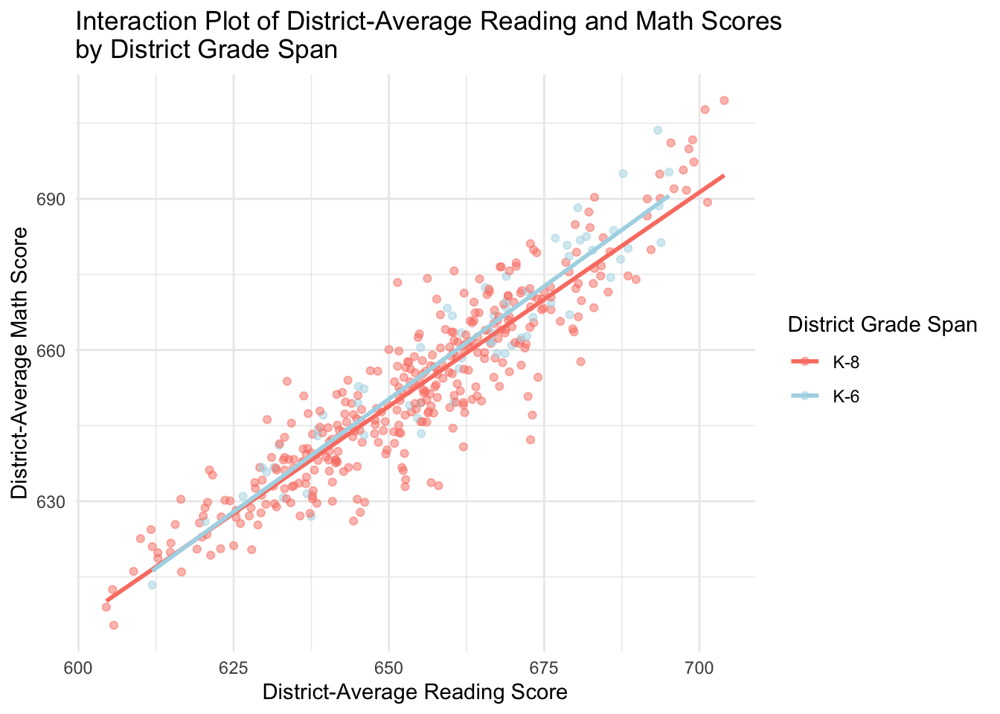
import numpy as npimport matplotlib.pyplot as plt# scatterplot of reading and math scores by district grade span, with a fitted line for eachfig, ax = plt.subplots()for grade, color, label in [("KK-06", "lightblue", "K-6"), ("KK-08", "salmon", "K-8")]: subset = CASchools[CASchools["grades"] == grade] ax.scatter(subset["read"], subset["math"], alpha=0.5, color=color, label=label) coeffs = np.polyfit(subset["read"], subset["math"], 1) x_line = np.array([subset["read"].min(), subset["read"].max()]) ax.plot(x_line, coeffs[0] * x_line + coeffs[1], color=color)ax.set_xlabel("District-Average Reading Score")ax.set_ylabel("District-Average Math Score")ax.set_title("Interaction Plot of District-Average Reading and Math Scores\nby District Grade Span")ax.legend(title="District Grade Span")plt.show()
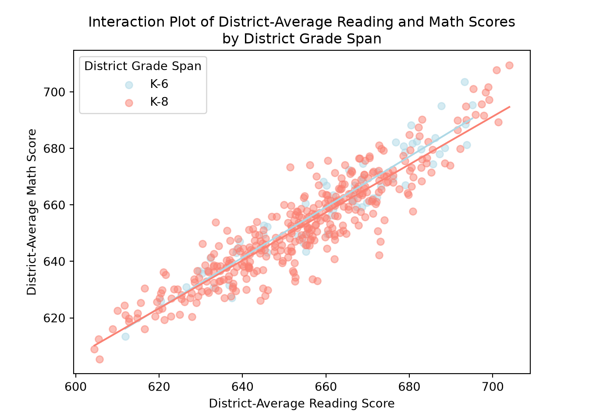
quietly import delimited "ca-schools.csv", clear* scatterplot of reading and math scores by district grade span, with a fittedlinefor eachtwoway (scatter math read if grades == "KK-06", mcolor("173 216 230%50")) /// (lfit math read if grades == "KK-06", lcolor("173 216 230")) /// (scatter math read if grades == "KK-08", mcolor("250 128 114%50")) /// (lfit math read if grades == "KK-08", lcolor("250 128 114")), ///title("Interaction Plot of District-Average Reading and Math Scores""by District Grade Span") ///xtitle("District-Average Reading Score") ytitle("District-Average Math Score") ///legend(order(2 "K-6" 4 "K-8") title("District Grade Span"))
usingStatsPlots, GLM, DataFrames# scatterplot of reading and math scores by district grade span, with a fitted line for eachplt =plot(legend =:outertopright, xlabel ="District-Average Reading Score", ylabel ="District-Average Math Score", title ="Interaction Plot of District-Average Reading and Math Scores\nby District Grade Span")for (grade, color, label) in [("KK-06", :lightblue, "K-6"), ("KK-08", :salmon, "K-8")] subset = CASchools[CASchools.grades .== grade, :]scatter!(plt, subset.read, subset.math, alpha =0.5, color = color, label = label) fit =lm(@formula(math ~ read), subset) x_line = [minimum(subset.read), maximum(subset.read)] b0, b1 =coef(fit)plot!(plt, x_line, b0 .+ b1 .* x_line, color = color, label =false)endplt
Plot the relationship between [predictor] and [outcome] separately for
each level of [categorical variable] in my dataset [dataset name], using
[R / Python / Stata / Julia], with a distinct color and fitted line for
each group.
The positive reading-math relationship holds for both groups; the two lines sit close together (consistent with the non-significant main effect) and are nearly parallel (consistent with the non-significant interaction).
We can also calculate the slope and intercept for each group:
ModuleNotFoundError: No module named 'marginaleffects'
# slope of read within each grades group (Python analogue of reghelper::simple_slopes)slopes(model_math_read_grades_interaction, variables="read", newdata=datagrid(model=model_math_read_grades_interaction, grades=["KK-08", "KK-06"]))
NameError: name 'slopes' is not defined
quietly import delimited "ca-schools.csv", cleargen grades_num = 1 if grades == "KK-08"replace grades_num = 2 if grades == "KK-06"labeldefine grades_lbl 1 "K-8" 2 "K-6"labelvalues grades_num grades_lblquietlyregress math c.read##ib1.grades_num* slope of read within each grades group (Stata analogue of reghelper::simple_slopes)margins, dydx(read) at(grades_num = (1 2))
(61 missing values generated)
(61 real changes made)
Average marginal effects Number of obs = 420
Model VCE: OLS
Expression: Linear prediction, predict()
dy/dx wrt: read
1._at: grades_num = 1
2._at: grades_num = 2
------------------------------------------------------------------------------
| Delta-method
| dy/dx std. err. t P>|t| [95% conf. interval]
-------------+----------------------------------------------------------------
read |
_at |
1 | .8489145 .0192255 44.16 0.000 .8111234 .8867057
2 | .8942782 .0453636 19.71 0.000 .8051077 .9834486
------------------------------------------------------------------------------
usingGLM, DataFrames# slope of read within each grades group (manual delta method: slope = b_read +# b_interaction * grades_K6; no mature reghelper-equivalent identified for Julia)V =vcov(model_math_read_grades_interaction)b =coef(model_math_read_grades_interaction)b_read, b_gradesK6, b_interaction = b[2], b[3], b[4]slope_K8 = b_readse_K8 =sqrt(V[2, 2])slope_K6 = b_read + b_interactionse_K6 =sqrt(V[2, 2] + V[4, 4] +2* V[2, 4])(slope_K8 = slope_K8, se_K8 = se_K8, slope_K6 = slope_K6, se_K6 = se_K6)
For my OLS model with an interaction between [continuous predictor] and
[categorical predictor] in [R / Python / Stata / Julia], compute the
slope of [continuous predictor] separately within each level of
[categorical predictor], with a standard error for each -- not just the
overall interaction coefficient.
This tells us two things: whether K-6 and K-8 districts differ at specific reading-score values, and the reading-score slope within each group. The K-8 slope is 0.849; the K-6 slope is 0.894. Both are significant — reading score is positively associated with math score within each grade span.
These slopes are also recoverable directly from the regression output. K-8 is the reference group, so its intercept and slope are the (Intercept) and read coefficients; gradesKK-06 and read:gradesKK-06 give the K-6 differences, so adding them to the K-8 coefficients recovers the K-6 line:
coefs =coef(model_math_read_grades_interaction)# reference-group (K-8) intercept and slopeintercept_K8 = coefs[1]slope_K8 = coefs[2]# K-6 intercept and slope, recovered by adding the K-6 coefficientsintercept_K6 = coefs[1] + coefs[3]slope_K6 = coefs[2] + coefs[4](intercept_K8 = intercept_K8, slope_K8 = slope_K8, intercept_K6 = intercept_K6, slope_K6 = slope_K6)
For my OLS model with an interaction between [continuous predictor] and a
two-level categorical predictor [categorical variable] in
[R / Python / Stata / Julia], show me how to recover the separate
intercept and slope for each group directly from the model's
coefficients (reference-group values, plus the reference-group values
plus the interaction-group differences).
\[\text{K-8 districts:} \\
math = 97.040 + 0.849(read)\]
This matches the slopes from simple_slopes() — 0.849 for K-8, 0.894 for K-6 — though simple_slopes() doesn’t report the intercepts we just recovered manually. The K-6 slope is slightly larger, but the non-significant interaction term means this difference isn’t large enough to conclude the reading-math relationship actually differs between the two groups.
Unlike the simple model, where grades was exactly the raw difference in means, the main effect of gradesKK-06 here is the estimated difference between K-6 and K-8 districts when read = 0 — far outside the data’s range, and not substantively meaningful on its own. simple_slopes() is more useful: it tests the group difference at realistic reading scores. At the mean reading score, that difference is small and not significant; it grows somewhat at higher reading scores, but with a non-significant interaction term overall, this pattern shouldn’t be over-read.
Overall, district-average reading score is a strong positive predictor of math score for both grade spans, with no strong evidence the relationship’s strength depends on grade span — consistent with the nearly parallel lines above.
Prediction and Interpretation
With respect to our initial question about predicting the district-average math score of a randomly selected district, we can now make a prediction — though, as we’ll see below, we should be careful about how much uncertainty surrounds it, rather than treating it as exact. If we know a district’s average reading score, predict() gives us its predicted math score directly from the fitted model:
# predicted math score for a district with a reading score of 700newdata <-data.frame(read =700)pred_700 <-predict(model_math_read, newdata)pred_700
1
692.1025
import statsmodels.api as smmodel_math_read = sm.OLS.from_formula("math ~ read", data=CASchools).fit()# predicted math score for a district with a reading score of 700newdata = pd.DataFrame({"read": [700]})pred_700 = model_math_read.predict(newdata)pred_700
0 692.102536
dtype: float64
quietly import delimited "ca-schools.csv", clearquietlyregress math read* predicted math scorefor a district with a reading scoreof 700display _b[_cons] + _b[read] * 700
692.10254
usingGLM, DataFramesmodel_math_read =lm(@formula(math ~ read), CASchools)# predicted math score for a district with a reading score of 700newdata =DataFrame(read = [700])pred_700 =predict(model_math_read, newdata)
Using my fitted OLS model of [outcome] on [predictor] in
[R / Python / Stata / Julia], predict the value of [outcome] for a new
observation with [predictor] = [value]. Show me the code, and write out
the prediction as the fitted equation (intercept + slope * value).
Written out as the fitted equation, for a district with a reading score of 700:
# scatterplot of district-average math vs read test scores with fitted regression line# and predicted point markedCASchools %>%ggplot(aes(x = read, y = math)) +geom_point(alpha =0.5) +geom_abline(intercept =coef(model_math_read)[1],slope =coef(model_math_read)[2], color="blue") +annotate("point", x =700, y = pred_700, color ="purple", size =3) +labs(title ="Scatterplot of District-Average Math vs Reading Scores withFitted Regression Line and Point of Intersection Marked",x ="District-Average Reading Score", y ="District-Average Math Score") +theme_minimal()
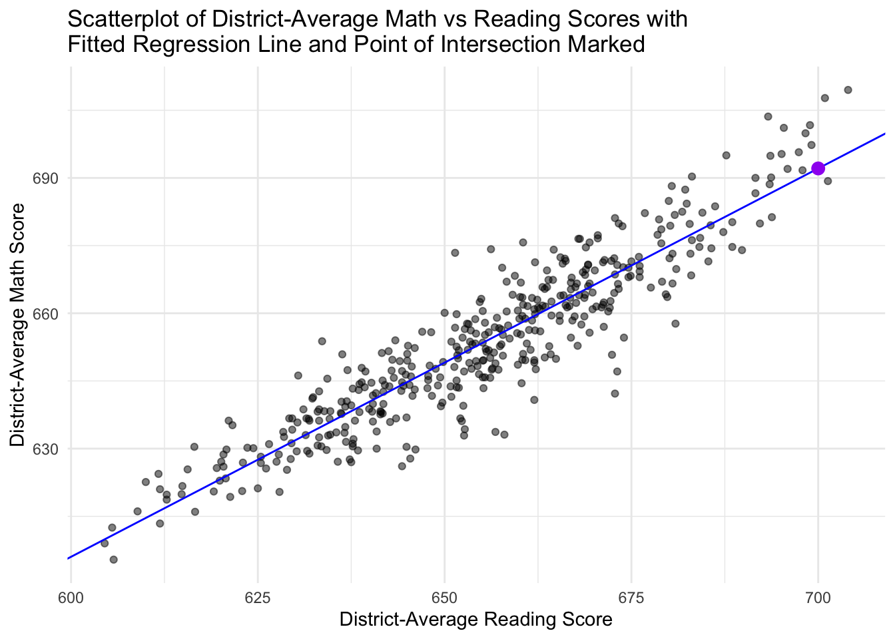
import numpy as npimport matplotlib.pyplot as plt# scatterplot of district-average math vs read test scores with fitted regression line# and predicted point markedb0, b1 = model_math_read.params["Intercept"], model_math_read.params["read"]x_line = np.array([CASchools["read"].min(), CASchools["read"].max()])plt.scatter(CASchools["read"], CASchools["math"], alpha=0.5)plt.plot(x_line, b0 + b1 * x_line, color="blue")plt.scatter([700], pred_700, color="purple", s=60, zorder=5)plt.xlabel("District-Average Reading Score")plt.ylabel("District-Average Math Score")plt.title("Fitted Regression Line and Point of Intersection Marked")plt.show()
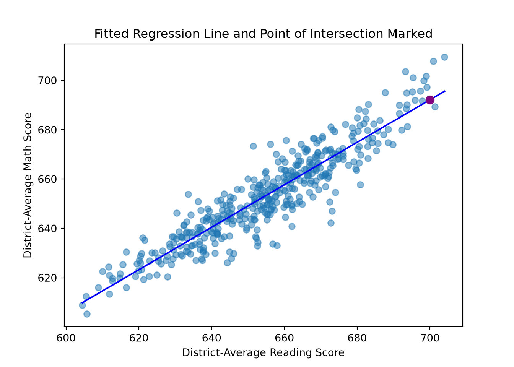
quietly import delimited "ca-schools.csv", clearquietlyregress math readlocal pred_700 = _b[_cons] + _b[read] * 700* scatterplot of district-average math vs read test scores with fitted regression line* and predicted point markedtwoway (scatter math read, msymbol(circle) mcolor(%50)) /// (lfit math read, lcolor(blue)) /// (scatteri `pred_700' 700, mcolor(purple) msymbol(circle) msize(large)), ///title("Fitted Regression Line and Point of Intersection Marked") ///xtitle("District-Average Reading Score") ytitle("District-Average Math Score") ///legend(off)
usingStatsPlotsb0, b1 =coef(model_math_read)# scatterplot of district-average math vs read test scores with fitted regression line# and predicted point markedscatter(CASchools.read, CASchools.math, alpha =0.5, legend =false, xlabel ="District-Average Reading Score", ylabel ="District-Average Math Score", title ="Fitted Regression Line and Point of Intersection Marked")plot!(x -> b0 + b1 * x, extrema(CASchools.read)..., color =:blue)scatter!([700], pred_700, color =:purple, markersize =6)
Plot my data with [predictor] on the x-axis and [outcome] on the y-axis in
[R / Python / Stata / Julia], showing the fitted OLS regression line and
marking a specific predicted point at [predictor] = [value].
How Uncertain Is This Prediction?
Before trusting a single predicted value like \(692.103\), consider how much uncertainty surrounds it. Two related quantities help:
# mean squared error and root mean squared error of the fitted modelMSE <- SSR /nrow(CASchools)RMSE <-sqrt(MSE)MSE
[1] 52.01936
RMSE
[1] 7.212445
import statsmodels.api as smmodel_math_read = sm.OLS.from_formula("math ~ read", data=CASchools).fit()# mean squared error and root mean squared error of the fitted modelMSE = (model_math_read.resid **2).sum() /len(CASchools)RMSE = MSE **0.5MSE, RMSE
quietly import delimited "ca-schools.csv", clearquietlyregress math read* mean squared error and root mean squared errorof the fittedmodeldisplay"MSE = "e(rss) / e(N)display"RMSE = "sqrt(e(rss) / e(N))
MSE = 52.019357
RMSE = 7.2124446
usingGLM, DataFramesmodel_math_read =lm(@formula(math ~ read), CASchools)# mean squared error and root mean squared error of the fitted modelMSE =deviance(model_math_read) /nrow(CASchools)RMSE =sqrt(MSE)
For my fitted OLS model of [outcome] on [predictor(s)] in
[R / Python / Stata / Julia], compute the mean squared error (MSE) and
root mean squared error (RMSE) on the training data. Explain why RMSE is
easier to interpret than MSE, and why this number is likely to be
optimistic compared to how the model performs on new data.
Our model’s RMSE is about 7.2 points. This is training error — how far off predictions are, on average, for the same data used to fit the model — and it’s usually optimistic, since the coefficients were chosen to minimize error on this data. A more honest estimate comes from held-out data, or cross-validation (see below).
There’s also a second kind of uncertainty. Predicting \(692.103\) for a district with a reading score of 700 could mean two things, and predict() distinguishes between them:
# uncertainty about the AVERAGE math score among districts with read = 700predict(model_math_read, newdata, interval ="confidence")
fit lwr upr
1 692.1025 690.4002 693.8049
# uncertainty about a SINGLE NEW district's math scorepredict(model_math_read, newdata, interval ="prediction")
fit lwr upr
1 692.1025 677.7899 706.4152
model_math_read = sm.OLS.from_formula("math ~ read", data=CASchools).fit()pred = model_math_read.get_prediction(newdata)# uncertainty about the AVERAGE math score among districts with read = 700,# and about a SINGLE NEW district's math scorepred.summary_frame(alpha=0.05)
mean mean_se ... obs_ci_lower obs_ci_upper
0 692.102536 0.866041 ... 677.78988 706.415191
[1 rows x 6 columns]
quietly import delimited "ca-schools.csv", clearquietlyregress math read* uncertainty about the AVERAGE math score among districts with read = 700lincom _b[_cons] + _b[read]*700* uncertainty about a SINGLE NEW district's math score (Stata has no built-in* prediction-interval command; add the residual variance to the mean-prediction* variance, then use the t-distribution, matching the formula behind R's* predict(..., interval = "prediction"))local pred_val = r(estimate)local pred_se = r(se)local sigma2 = e(rss) / e(df_r)local pi_se = sqrt(`sigma2' + `pred_se'^2)local tcrit = invttail(e(df_r), 0.025)display"95% PI: ["`pred_val' - `tcrit'*`pi_se'", "`pred_val' + `tcrit'*`pi_se'"]"
model_math_read =lm(@formula(math ~ read), CASchools)newdata =DataFrame(read = [700])# uncertainty about the AVERAGE math score among districts with read = 700predict(model_math_read, newdata, interval =:confidence)# uncertainty about a SINGLE NEW district's math scorepredict(model_math_read, newdata, interval =:prediction)
Using my fitted OLS model of [outcome] on [predictor] in
[R / Python / Stata / Julia], predict [outcome] for a new value of
[predictor] = [value], and give me both:
1. A confidence interval for the AVERAGE [outcome] at that predictor
value.
2. A prediction interval for a SINGLE NEW observation at that predictor
value.
Explain why the prediction interval is wider than the confidence
interval.
The confidence interval (\([690.4, 693.8]\)) is uncertainty about the mean math score among districts with a reading score of 700 — it only has to account for how precisely we’ve estimated \(\beta_0\) and \(\beta_1\). The prediction interval (\([677.8, 706.4]\)) is uncertainty about one new district’s score — it adds the individual variability around the line (\(\varepsilon\)) that more data can’t shrink away. That’s why the prediction interval is substantially wider: predicting one new observation is harder than estimating an average, even holding the model fixed.
Both intervals assume we’re predicting within the observed range of reading scores — roughly 605 to 704 (see the discussion of support in What Does OLS Actually Estimate? above). A reading score of, say, 400 or 900 would be extrapolation: predict() will still return a number, with no warning that it’s left the region the model was estimated from.
None of this — including the \(R^2\) from earlier — tells us how the model performs on districts it hasn’t seen. To check that, we hold out part of the data, fit on the rest, and compare predictions on the held-out portion to a baseline: the intercept-only model.
# 80/20 train-test split, fitting the simple and intercept-only models on the training setset.seed(42)n <-nrow(CASchools)train_idx <-sample(seq_len(n), size =floor(0.8* n))train <- CASchools[train_idx, ]test <- CASchools[-train_idx, ]fit_train <-lm(math ~ read, data = train)intercept_only_train <-lm(math ~1, data = train)pred_fit <-predict(fit_train, newdata = test)pred_intercept_only <-predict(intercept_only_train, newdata = test)# root mean squared error on the held-out datarmse_fit <-sqrt(mean((test$math - pred_fit)^2))rmse_intercept_only <-sqrt(mean((test$math - pred_intercept_only)^2))# mean absolute error on the held-out datamae_fit <-mean(abs(test$math - pred_fit))mae_intercept_only <-mean(abs(test$math - pred_intercept_only))rmse_fit
[1] 6.651132
rmse_intercept_only
[1] 18.06438
mae_fit
[1] 5.338602
mae_intercept_only
[1] 15.00357
import numpy as np# 80/20 train-test split, fitting the simple and intercept-only models on the# training set (a fixed seed makes the split reproducible WITHIN a language,# but R, Python, Stata, and Julia use different random-number generators, so# the same seed will not select the same held-out districts across languages)np.random.seed(42)n =len(CASchools)train_idx = np.random.choice(n, size=int(0.8* n), replace=False)train = CASchools.iloc[train_idx]test = CASchools.drop(CASchools.index[train_idx])fit_train = sm.OLS.from_formula("math ~ read", data=train).fit()intercept_only_train = sm.OLS.from_formula("math ~ 1", data=train).fit()pred_fit = fit_train.predict(test)pred_intercept_only = intercept_only_train.predict(test)# root mean squared error on the held-out datarmse_fit = np.sqrt(np.mean((test["math"] - pred_fit) **2))rmse_intercept_only = np.sqrt(np.mean((test["math"] - pred_intercept_only) **2))# mean absolute error on the held-out datamae_fit = np.mean(np.abs(test["math"] - pred_fit))mae_intercept_only = np.mean(np.abs(test["math"] - pred_intercept_only))rmse_fit, rmse_intercept_only, mae_fit, mae_intercept_only
quietly import delimited "ca-schools.csv", clear* 80/20 train-testsplit, fitting the simple and intercept-only models on the* training set (same caveat as the Python tab: the same seed will not select* the same held-out districts across languages)setseed 42generate u = runiform()sort ugenerate train = _n <= round(0.8 * _N)quietlyregress math read if train == 1predict pred_fit if train == 0quietlyregress math if train == 1predict pred_intercept_only if train == 0* root mean squared erroron the held-out datagenerate sq_err_fit = (math - pred_fit)^2 if train == 0generate sq_err_intercept = (math - pred_intercept_only)^2 if train == 0quietlysummarize sq_err_fitdisplay"RMSE fit = "sqrt(r(mean))quietlysummarize sq_err_interceptdisplay"RMSE intercept-only = "sqrt(r(mean))* mean absolute erroron the held-out datagenerate abs_err_fit = abs(math - pred_fit) if train == 0generate abs_err_intercept = abs(math - pred_intercept_only) if train == 0quietlysummarize abs_err_fitdisplay"MAE fit = "r(mean)quietlysummarize abs_err_interceptdisplay"MAE intercept-only = "r(mean)
usingGLM, DataFrames, Random, Statistics# 80/20 train-test split, fitting the simple and intercept-only models on the# training set (same caveat as the Python tab: the same seed will not select# the same held-out districts across languages)Random.seed!(42)n =nrow(CASchools)train_idx =randperm(n)[1:floor(Int, 0.8* n)]train = CASchools[train_idx, :]test = CASchools[setdiff(1:n, train_idx), :]fit_train =lm(@formula(math ~ read), train)intercept_only_train =lm(@formula(math ~1), train)pred_fit =predict(fit_train, test)pred_intercept_only =predict(intercept_only_train, test)# root mean squared error on the held-out datarmse_fit =sqrt(mean((test.math .- pred_fit).^2))rmse_intercept_only =sqrt(mean((test.math .- pred_intercept_only).^2))# mean absolute error on the held-out datamae_fit =mean(abs.(test.math .- pred_fit))mae_intercept_only =mean(abs.(test.math .- pred_intercept_only))(rmse_fit = rmse_fit, rmse_intercept_only = rmse_intercept_only, mae_fit = mae_fit, mae_intercept_only = mae_intercept_only)
Evaluate whether my fitted OLS model of [outcome] on [predictor(s)] in my
dataset [dataset name] actually improves predictions on new data, using
[R / Python / Stata / Julia].
1. Split the data into an 80% training set and a 20% held-out test set
(with a fixed seed for reproducibility).
2. Fit my model, and an intercept-only baseline, on the training set only.
3. Compute RMSE and MAE for both models on the held-out test set, and
tell me whether my model meaningfully beats the baseline.
The fitted model’s held-out RMSE (about 6.65) is substantially lower than the intercept-only model’s (about 18.06), and the same holds for MAE (5.34 vs. 15.00). This — not the in-sample \(R^2\), and not one fitted point from the training data — is the real evidence that read improves predictions for districts the model wasn’t fit on.
Sensitivity and Reporting
Before reporting results from any OLS model, it helps to work through a short checklist. Applying it here to our final model, math ~ read * grades:
Estimand: The (non-causal) association between district-average reading score and district-average math score, and whether that association differs by district grade span — see Assessing the Research Design.
Unit of analysis: Each California K–6 or K–8 school district.
Analysis sample: All 420 districts in the CASchools census; no missing data in any variable used, so every model in this guide is fit on the same sample (see the FAQ below).
Specification:math ~ read * grades, a continuous predictor interacted with a binary categorical predictor, chosen to test whether the reading-math relationship differs by grade span, building on the simpler models fit earlier in this guide.
Coefficient estimates and CIs: For K-8 districts (the reference group), the estimated intercept is 97.040 and the slope on read is 0.849; for K-6 districts, the intercept is 68.996 and the slope is 0.894 (see Pressure-Testing an Interaction). As with the simpler models earlier in this guide, confidence intervals should be reported alongside these.
SE choice: We have not tested this model’s homoskedasticity assumption directly. Given the heteroskedasticity we found in the simple model, robust standard errors would be a safer default for this model’s SEs, CIs, and p-values too.
Fit: Not reported for this model in this guide; as discussed in How Well Does the Model Fit?, any \(R^2\) here would still only describe in-sample fit.
Diagnostics and influence: Not re-run for this specific model in this guide (recall that assumption checks do not carry over automatically from the simple model); the leverage, studentized residual, and Cook’s distance checks in the FAQ below illustrate how you would do this.
Prediction uncertainty or causal limitations: None of the coefficients in this guide support a causal claim (see Identification Comes First) — read and grades were not assigned to districts, so every coefficient here describes an adjusted association among the districts we observe, not the effect of changing a district’s reading score or grade span.
Sensitivity analysis: Not conducted for this specific model in this guide; the leave-one-out check in the FAQ below, applied to the simple model, found the results were not driven by a single district — a similar check on this final model would be needed before relying on it.
Not every applied analysis will have a clean answer for all ten items — but working through the list, and being honest when an item has not been checked, is more useful than an unexamined summary output.
FAQ
Can I use OLS when the outcome is binary?
Mechanically, lm() will work even if \(Y\) is binary. When \(Y \in \{0, 1\}\), the conditional expectation function is a probability:
\[E[Y \mid X] = P(Y = 1 \mid X)\]
so fitting \(Y\) on \(X\) with OLS estimates a linear probability model (LPM) — a linear approximation to how \(P(Y=1)\) varies with \(X\). Coefficients are read in probability points: \(\hat{\beta}_1 = 0.05\) means a one-unit increase in \(X\) is associated with a 5-percentage-point increase in \(P(Y=1)\) — not a 5% increase, and not log-odds (as in logit).
When the predictor is also binary — a treatment indicator \(D \in \{0,1\}\) — the LPM is exact: as with grades earlier, the intercept is \(P(Y=1 \mid D=0)\) and the slope is the difference in proportions, \(P(Y=1\mid D=1) - P(Y=1\mid D=0)\). lm(Y ~ D) and a two-proportion test do the same arithmetic.
Whether that difference is causal depends on where \(D\) came from, not on using OLS. A randomized\(D\) gives exchangeability by design and a causal coefficient — the same logic as the randomized outcome ~ treatment example in Identification Comes First. An unrandomized \(D\) gives only an adjusted association.
What are the limitations of the linear probability model?
Even when identification is not the concern, the LPM has three structural problems:
Inherent heteroskedasticity. A Bernoulli outcome has variance \(p(X)(1-p(X))\) by construction, which depends on \(X\) — so homoskedasticity fails by the model’s structure, not just empirically. Robust SEs (see OLS and the Gauss–Markov Theorem) are close to mandatory here.
Fitted values outside\([0,1]\). A straight line can predict probabilities below 0 or above 1 — values with no valid probability interpretation.
Constant marginal effects. The LPM assumes a one-unit change in \(X\) moves \(P(Y=1)\) by the same amount regardless of the starting probability — but a bounded probability should show shrinking effects near 0 or 1. Logit and probit build that in; the LPM doesn’t.
For binary outcomes where these limitations matter, see our logit and probit guide for the alternatives and how to fit and interpret them.
Can I use OLS for counts, proportions, or ordinal outcomes?
Mechanically, yes — lm() fits a line to any numeric outcome: counts, proportions, ordinal scales. Whether it’s a good choice is separate, and often the answer is no:
Squared-error loss treats all errors as equally costly regardless of scale — a poor match for skewed or bounded outcomes.
Predictions outside the outcome’s support are possible for the same reason as the LPM above — a fitted count can be negative, a fitted proportion can exceed 1.
Skew and dispersion are especially common in count data (e.g., many zeros, a long right tail), which OLS does not model.
Ordinal scoring is arbitrary. Treating a 1–5 scale as evenly spaced assumes the gap between 1 and 2 means the same as the gap between 4 and 5 — an assumption the data may not support.
Outcome-specific models — Poisson or negative binomial regression for counts, beta regression for proportions, ordinal logistic regression for ordinal scales — are usually a better starting point. See our logit and probit guide for the binary case.
What does a multiple-regression coefficient actually represent?
The Frisch–Waugh–Lovell (FWL) theorem describes exactly what a multiple-regression coefficient is. For the coefficient on \(X_1\) with additional regressors \(X_2\):
Regress \(Y\) on \(X_2\) (and the intercept) and keep the residuals, \(\tilde{Y}\).
Regress \(X_1\) on \(X_2\) (and the intercept) and keep the residuals, \(\tilde{X}_1\).
Regress \(\tilde{Y}\) on \(\tilde{X}_1\) — the resulting slope is exactly \(\hat{\beta}_1\) from the original multiple regression.
This is often called “partialling out” or “residualizing”: the multiple-regression coefficient on \(X_1\) is the association between whatever variation in \(Y\) and \(X_1\) is not explainable by \(X_2\).
FWL is arithmetic, not causal inference. It explains what number the coefficient is, not that including \(X_2\) achieved causal control. Whether residualizing on \(X_2\) moves us closer to a causal quantity still depends entirely on \(X_2\)’s role — confounder, mediator, collider, instrument, or precision variable each change what the residualized coefficient represents (see our variable-selection guide).
How do I check for influential observations?
Not every observation contributes equally to a fitted regression line. A few diagnostics quantify this:
Leverage (\(h_{ii}\), the diagonal of the hat matrix) measures how unusual an observation’s predictor values are, independent of its outcome — high-leverage points can pull the fitted line toward themselves.
Studentized residuals rescale residuals by their estimated standard deviation (excluding that observation’s own influence), making them comparable across observations.
Cook’s distance combines both — how much the fitted values for the whole model would change if an observation were dropped — capturing points influential through high leverage and a large residual (see Blackwell (2026), chapter 7, for formal definitions).
We can assess these for our simple model, math ~ read, and flag the five districts with the largest Cook’s distance:
# leverage, studentized residuals, and Cook's distance for each observationlev <-hatvalues(model_math_read)stud <-rstudent(model_math_read)cooksd <-cooks.distance(model_math_read)# the 5 observations with the largest Cook's distancetop5 <-order(cooksd, decreasing =TRUE)[1:5]data.frame(row = top5, leverage = lev[top5],studentized_resid = stud[top5], cooksD = cooksd[top5])
quietly import delimited "ca-schools.csv", clearquietlyregress math read* leverage, studentized residuals, and Cook's distance for each observationpredict lev, leveragepredict stud, rstudentpredict cooksd, cooksd* the 5 observations with the largest Cook's distancegsort -cooksdlist read math lev stud cooksd in 1/5
usingGLM, DataFrames, LinearAlgebramodel_math_read =lm(@formula(math ~ read), CASchools)# leverage, studentized residuals, and Cook's distance for each observation# (manual: no mature built-in for these three diagnostics identified in GLM.jl)X =modelmatrix(model_math_read)H = X *inv(X'* X) * X'lev =diag(H)resid_vec =residuals(model_math_read)n, p =size(X)sigma2 =deviance(model_math_read) / (n - p)# externally studentized residuals (leave-one-out residual variance)sigma2_i = ((n - p) .* sigma2 .- resid_vec.^2./ (1.- lev)) ./ (n - p -1)stud = resid_vec ./sqrt.(sigma2_i .* (1.- lev))# Cook's distancecooksd = (resid_vec.^2./ (p .* sigma2)) .* (lev ./ (1.- lev).^2)top5 =sortperm(cooksd, rev =true)[1:5]DataFrame(row = top5, leverage = lev[top5], studentized_resid = stud[top5], cooksD = cooksd[top5])
For my fitted OLS model of [outcome] on [predictor(s)] in
[R / Python / Stata / Julia], compute leverage, (externally) studentized
residuals, and Cook's distance for every observation, and show me the
5 observations with the largest Cook's distance. Explain what each
diagnostic captures and how they differ.
There are rules of thumb for determining influential observations (e.g., leverage above \(2(k+1)/n\), Cook’s distance above \(4/n\)), but they’re flags for investigation, not verdicts. In our simple model, several districts exceed the leverage rule of thumb and a handful have Cook’s distance modestly above \(4/n\). However, none approach the classic threshold of 1, or stand out in magnitude.
The most direct way to check whether a flagged observation actually matters is a leave-one-out sensitivity check, where we refit the model without it and see how much the coefficients move.
# read coefficient with and without the most influential districtworst <- top5[1]model_math_read_loo <-lm(math ~ read, data = CASchools[-worst, ])coef(model_math_read)
(Intercept) read
89.5657974 0.8607668
coef(model_math_read_loo)
(Intercept) read
92.1111770 0.8568171
worst = top5[0]# read coefficient with and without the most influential districtmodel_math_read_loo = sm.OLS.from_formula("math ~ read", data=CASchools.drop(worst)).fit()model_math_read.params, model_math_read_loo.params
quietly import delimited "ca-schools.csv", clearquietlyregress math readpredict cooksd, cooksd* identify the single most influential districtegen max_cooksd = max(cooksd)gen worst = cooksd == max_cooksd* read coefficient with and without the most influential districtdisplay"With all districts:"regress math readdisplay"Excluding the most influential district:"regress math read if worst == 0
With all districts:
Source | SS df MS Number of obs = 420
-------------+---------------------------------- F(1, 418) = 2401.51
Model | 125522.592 1 125522.592 Prob > F = 0.0000
Residual | 21848.13 418 52.2682536 R-squared = 0.8517
-------------+---------------------------------- Adj R-squared = 0.8514
Total | 147370.722 419 351.720099 Root MSE = 7.2297
------------------------------------------------------------------------------
math | Coefficient Std. err. t P>|t| [95% conf. interval]
-------------+----------------------------------------------------------------
read | .8607668 .0175648 49.01 0.000 .8262404 .8952931
_cons | 89.5658 11.50984 7.78 0.000 66.94141 112.1902
------------------------------------------------------------------------------
Excluding the most influential district:
Source | SS df MS Number of obs = 419
-------------+---------------------------------- F(1, 417) = 2386.11
Model | 123292.159 1 123292.159 Prob > F = 0.0000
Residual | 21546.7327 417 51.6708218 R-squared = 0.8512
-------------+---------------------------------- Adj R-squared = 0.8509
Total | 144838.891 418 346.504525 Root MSE = 7.1882
------------------------------------------------------------------------------
math | Coefficient Std. err. t P>|t| [95% conf. interval]
-------------+----------------------------------------------------------------
read | .8568171 .0175405 48.85 0.000 .8223381 .891296
_cons | 92.11118 11.4923 8.02 0.000 69.52112 114.7012
------------------------------------------------------------------------------
# read coefficient with and without the most influential districtworst = top5[1]CASchools_loo = CASchools[setdiff(1:nrow(CASchools), worst), :]model_math_read_loo =lm(@formula(math ~ read), CASchools_loo)(coef(model_math_read), coef(model_math_read_loo))
For my fitted OLS model of [outcome] on [predictor(s)] in
[R / Python / Stata / Julia], refit the model after excluding the single
most influential observation (by Cook's distance), and compare the
coefficient on [key predictor] before and after. Explain what a large vs.
small shift would mean.
Dropping the single most influential district only slightly changes the read coefficient from about 0.861 to about 0.857. This is reassuring, as our earlier interpretations do not hinge on any one district.
If a leave-one-out check did reveal a large change, the right response would not be automatic deletion — that can bias the analysis toward what the analyst wanted, and it can discard real information. Instead we would need to investigate a few possibilities. First, we’d ask if this is a data quality issue (a coding error, an implausible value). Second, is this scientifically relevant or a fundamentally different kind of unit? Third, does the model have adequate support at its predictor values, or is it extrapolating? Whatever the answer, we should report the sensitivity, as readers should know a result depends heavily on one or two observations and whether or not those observations are excluded.
How does lm() handle missing data?
By default, lm() silently drops any row with a missing value in a used variable — complete-case analysis — and R won’t warn you. This matters for two reasons: if missingness relates systematically to the outcome or predictors, complete-case analysis can bias results, not just shrink the sample; and different specifications using different variables can silently end up fit on different subsets of rows, making their coefficients, fit statistics, and any nested-model comparisons (like the partial F-tests discussed above) hard to compare, since they no longer describe the same districts.
You should always report the analysis sample and check missingness explicitly, rather than relying on the default:
# missing values by variable, and rows with complete datacolSums(is.na(CASchools))
X district school county grades students
0 0 0 0 0 0
teachers calworks lunch computer expenditure income
0 0 0 0 0 0
english read math
0 0 0
nrow(CASchools)
[1] 420
sum(complete.cases(CASchools))
[1] 420
# missing values by variable, and rows with complete dataCASchools.isna().sum()
Unnamed: 0 0
district 0
school 0
county 0
grades 0
students 0
teachers 0
calworks 0
lunch 0
computer 0
expenditure 0
income 0
english 0
read 0
math 0
income_cat 0
dtype: int64
usingDataFrames# missing values by variable, and rows with complete datamapcols(col ->sum(ismissing.(col)), CASchools)nrow(CASchools)sum(completecases(CASchools))
Check for missing data in my dataset [dataset name] before running any
regression, using [R / Python / Stata / Julia].
1. Show me the count of missing values for each variable.
2. Show me the total number of rows and the number of rows with complete
data across all variables I plan to use.
3. Explain why silently dropping rows with missing values (the default
in most regression commands) can be risky, and what I should report
instead.
CASchools has no missing values in any variable used here, so every model in this guide is fit on the same 420 districts. This won’t always be the case, and you should always explicitly check this.
References
Angrist, Joshua D., and Jörn-Steffen Pischke. 2009. Mostly Harmless Econometrics: An Empiricist’s Companion. Princeton University Press.
Arel-Bundock, Vincent, Noah Greifer, and Andrew Heiss. 2024. “How to Interpret Statistical Models Using marginaleffects for R and Python.”Journal of Statistical Software 111 (9): 1–32. https://doi.org/10.18637/jss.v111.i09.
Burant, Christopher J. 2022. “A Methodological Note: An Introduction to Autoregressive Models.”International Journal of Aging & Human Development 95 (4): 516–22. https://doi.org/10.1177/00914150211066554.
King, Gary, Jonathan Rosen, and Martin Tanner. 2004. Ecological Inference: New Methodological Strategies. Analytical Methods for Social Research. Cambridge University Press.
Montgomery, Douglas C, Elizabeth A Peck, and G Geoffrey Vining. 2021. Introduction to Linear Regression Analysis. John Wiley & Sons.
Spirling, Arthur, and Brandon M. Stewart. 2025. “What Good Is a Regression? Inference to the Best Explanation and the Practice of Political Science Research.”The Journal of Politics 87 (4): 1587–99. https://doi.org/10.1086/734280.
Thompson, Christopher G., Rae Seon Kim, Ariel M. Aloe, and Betsy Jane Becker. 2017. “Extracting the Variance Inflation Factor and Other Multicollinearity Diagnostics from Typical Regression Results.”Basic and Applied Social Psychology 39 (2): 81–90. https://doi.org/10.1080/01973533.2016.1277529.